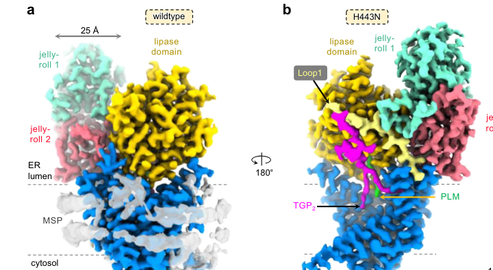

GPI inositol-deacylase that catalyzes removal of inositol-linked acyl chains from GPI-anchored proteins in the ER, essential for GPI-AP biosynthesis, ER-Golgi transport, and cytokinesis
| GO Term | Evidence | Action | Reason |
|---|---|---|---|
|
GO:0005783
endoplasmic reticulum
|
IBA
GO_REF:0000033 |
ACCEPT |
Summary: IBA annotation correctly identifies ER localization, consistent with comprehensive evidence from recent studies and UniProt annotation
Reason: The ER localization is well-supported across multiple lines of evidence. The deep research document states "Bst1 localizes primarily to two distinct cellular compartments within the secretory pathway the endoplasmic reticulum and early Golgi apparatus" and "Within the ER, the protein exhibits a characteristic distribution pattern extending from the nuclear envelope ER to peripheral ER tubules and sheets" [bst1-deep-research-perplexity.md]. UniProt annotation confirms "Endoplasmic reticulum membrane" localization [bst1-uniprot.txt]. The IBA phylogenetic inference is supported by conservation of this localization across orthologs including mammalian PGAP1 and budding yeast Bst1 [bst1-deep-research-perplexity.md].
Supporting Evidence:
file:SCHPO/bst1/bst1-deep-research-perplexity.md
Bst1 localizes primarily to two distinct cellular compartments within the secretory pathway: the endoplasmic reticulum and early Golgi apparatus. Within the ER, the protein exhibits a characteristic distribution pattern extending from the nuclear envelope ER to peripheral ER tubules and sheets.
file:SCHPO/bst1/bst1-uniprot.txt
SUBCELLULAR LOCATION: Endoplasmic reticulum membrane {ECO:0000250}; Multi-pass membrane protein {ECO:0000250}.
file:SCHPO/bst1/bst1-deep-research-falcon.md
These data support Bst1 acting in the **early secretory pathway**, consistent with its conserved ER-resident deacylase role.
|
|
GO:0160215
deacylase activity
|
IBA
GO_REF:0000033 |
MODIFY |
Summary: While technically correct, this general deacylase activity term is too broad and should be replaced with the more specific GO:0050185 (phosphatidylinositol deacylase activity) that accurately reflects the enzyme's substrate specificity
Reason: The IBA annotation uses a very general molecular function term that lacks informative value about the actual biochemical function. Bst1 specifically catalyzes "removal of inositol-linked acyl chains from GPI-anchored proteins" [bst1-deep-research-perplexity.md], not general deacylation. UniProt records the function as "GPI inositol-deacylase" with EC 3.1.-.- [bst1-uniprot.txt]. The deep research extensively documents that "The primary enzymatic function of Bst1 is the catalysis of inositol deacylation, a critical step in the post-translational modification of glycosylphosphatidylinositol-anchored proteins" and "Bst1 catalyzes the hydrolytic removal of this inositol-acyl chain" [bst1-deep-research-perplexity.md]. Note that there is already an IBA annotation in the full GOA for GO:0050185 (phosphatidylinositol deacylase activity), which is the appropriate specific term.
Proposed replacements:
phosphatidylinositol deacylase activity
Supporting Evidence:
file:SCHPO/bst1/bst1-deep-research-perplexity.md
The primary enzymatic function of Bst1 is the catalysis of inositol deacylation, a critical step in the post-translational modification of glycosylphosphatidylinositol-anchored proteins. Bst1 catalyzes the hydrolytic removal of this inositol-acyl chain, converting the triacylated GPI structure into a diacylated form.
file:SCHPO/bst1/bst1-uniprot.txt
RecName: Full=GPI inositol-deacylase; EC=3.1.-.-
file:SCHPO/bst1/bst1-deep-research-falcon.md
Hydrolytic cleavage of the **ester-linked acyl chain** attached to the **2-hydroxyl of inositol** within the GPI anchor on a newly GPI-anchored protein (GPI-AP).
file:SCHPO/bst1/bst1-deep-research-falcon.md
2024 structural/biochemical work indicates PGAP1 achieves specificity by **binding the lipid and glycan features of GPI-AP substrates** within a specialized cavity, helping avoid indiscriminate hydrolysis of bulk membrane lipids.
|
|
GO:0006506
GPI anchor biosynthetic process
|
IBA
GO_REF:0000033 |
ACCEPT |
Summary: IBA annotation correctly captures core biological function as Bst1 catalyzes the essential first post-attachment remodeling step in GPI-AP biosynthesis
Reason: This IBA annotation accurately reflects Bst1's essential role in GPI anchor biosynthesis. The deep research extensively documents that "Within this post-attachment phase, Bst1-catalyzed inositol deacylation represents the first and rate-limiting step" and "The biosynthesis of GPI-anchored proteins represents one of the most complex post-translational modification pathways in eukaryotic cells" [bst1-deep-research-perplexity.md]. UniProt function states "Involved in inositol deacylation of GPI-anchored proteins which plays important roles in the quality control and ER-associated degradation of GPI-anchored proteins" [bst1-uniprot.txt]. This is clearly a core function.
Supporting Evidence:
file:SCHPO/bst1/bst1-deep-research-perplexity.md
Within this post-attachment phase, Bst1-catalyzed inositol deacylation represents the first and rate-limiting step. The biosynthesis of GPI-anchored proteins represents one of the most complex post-translational modification pathways in eukaryotic cells, involving more than twenty catalytic steps divided into synthesis and post-attachment phases.
file:SCHPO/bst1/bst1-uniprot.txt
FUNCTION: Involved in inositol deacylation of GPI-anchored proteins which plays important roles in the quality control and ER-associated degradation of GPI-anchored proteins.
file:SCHPO/bst1/bst1-deep-research-falcon.md
Bst1 acts **after GPI attachment to protein and before efficient ER export**, as the first remodeling step in the post-attachment GPI lipid-remodeling pathway
|
|
GO:0005783
endoplasmic reticulum
|
IEA
GO_REF:0000117 |
ACCEPT |
Summary: Computational IEA annotation is consistent with experimental evidence and IBA annotation, redundant but accurate
Reason: This ARBA machine learning annotation is correct and consistent with all other evidence for ER localization, though redundant with the IBA annotation. The annotation is broadly supported by the same evidence cited for the IBA annotation above [bst1-deep-research-perplexity.md, bst1-uniprot.txt].
Supporting Evidence:
file:SCHPO/bst1/bst1-deep-research-perplexity.md
Bst1 localizes primarily to two distinct cellular compartments within the secretory pathway: the endoplasmic reticulum and early Golgi apparatus.
|
|
GO:0005789
endoplasmic reticulum membrane
|
IEA
GO_REF:0000044 |
ACCEPT |
Summary: IEA annotation from UniProt subcellular location mapping correctly identifies ER membrane localization, consistent with multi-pass transmembrane architecture
Reason: This annotation based on UniProt subcellular location vocabulary is accurate and more specific than general ER localization. UniProt explicitly states "Endoplasmic reticulum membrane; Multi-pass membrane protein" [bst1-uniprot.txt]. The deep research confirms "The transmembrane architecture of Bst1 is essential for its proper localization and function" and "The protein contains multiple transmembrane domains that anchor it within the ER membrane with its catalytic domain positioned toward the ER lumen" [bst1-deep-research-perplexity.md]. The protein has 9 predicted transmembrane helices according to UniProt features [bst1-uniprot.txt].
Supporting Evidence:
file:SCHPO/bst1/bst1-uniprot.txt
SUBCELLULAR LOCATION: Endoplasmic reticulum membrane {ECO:0000250}; Multi-pass membrane protein {ECO:0000250}.
file:SCHPO/bst1/bst1-deep-research-perplexity.md
The protein contains multiple transmembrane domains that anchor it within the ER membrane with its catalytic domain positioned toward the ER lumen where nascent GPI-APs emerge.
|
|
GO:0015031
protein transport
|
IEA
GO_REF:0000043 |
ACCEPT |
Summary: IEA annotation from UniProt keyword mapping is accurate but general, capturing Bst1's role in regulating ER-to-Golgi transport of GPI-APs and other secretory cargo
Reason: This annotation from UniProt "Protein transport" keyword is technically accurate though somewhat general. Bst1 plays a critical role in protein transport, specifically regulating ER-to-Golgi transport. The deep research states "The role of Bst1 in regulating early secretory pathway transport extends beyond its direct catalytic activity on GPI-APs to encompass broader coordination of ER-to-Golgi transport and COPII vesicle dynamics" and "acid phosphatase secretion is significantly reduced in bst1 deletion mutants, indicating that the transport of multiple secretory cargo types is compromised" [bst1-deep-research-perplexity.md]. UniProt keywords include "Protein transport; Transport" [bst1-uniprot.txt]. While not the most specific term, it captures an important function.
Supporting Evidence:
file:SCHPO/bst1/bst1-deep-research-perplexity.md
The role of Bst1 in regulating early secretory pathway transport extends beyond its direct catalytic activity on GPI-APs to encompass broader coordination of ER-to-Golgi transport and COPII vesicle dynamics. Acid phosphatase secretion is significantly reduced in bst1 deletion mutants, indicating that the transport of multiple secretory cargo types is compromised.
file:SCHPO/bst1/bst1-uniprot.txt
KW Protein transport; Transport.
file:SCHPO/bst1/bst1-deep-research-falcon.md
Deacylation is required for binding to **p24-family cargo receptors** and recruitment of GPI-APs into **COPII vesicles**, promoting efficient ER export and secretion.
file:SCHPO/bst1/bst1-deep-research-falcon.md
Reduced secretion in an **acid phosphatase secretion assay** (qualitatively described as significantly decreased).
|
|
GO:0016787
hydrolase activity
|
IEA
GO_REF:0000043 |
MARK AS OVER ANNOTATED |
Summary: IEA annotation from UniProt keyword is technically correct but too general, superseded by more specific terms for deacylase and phosphatidylinositol deacylase activity
Reason: This very general molecular function term from UniProt "Hydrolase" keyword is technically accurate since Bst1 is a serine hydrolase, but provides minimal informative value. The deep research describes "The catalytic mechanism of Bst1 and its human ortholog PGAP1" involving "a serine hydrolase lipase domain" with "serine hydrolase-type catalysis" [bst1-deep-research-perplexity.md]. However, this general term should be superseded by the specific GO:0050185 (phosphatidylinositol deacylase activity). This represents over-annotation up the hierarchy.
Supporting Evidence:
file:SCHPO/bst1/bst1-deep-research-perplexity.md
The catalytic mechanism of Bst1 and its human ortholog PGAP1 has been clarified through recent structural studies that revealed the enzyme adopts a distinctive 10-transmembrane architecture containing both a serine hydrolase lipase domain and a jelly-roll domain. The lipase domain exhibits a characteristic α/β hydrolase fold containing a catalytic serine residue that acts as the nucleophile in the deacylation reaction.
|
|
GO:0016788
hydrolase activity, acting on ester bonds
|
IEA
GO_REF:0000002 |
MARK AS OVER ANNOTATED |
Summary: IEA annotation from InterPro domain mapping correctly reflects the ester bond cleavage mechanism, but like the parent hydrolase term it is superseded by the specific phosphatidylinositol deacylase activity and represents over-annotation up the hierarchy
Reason: This InterPro-based annotation accurately captures the chemical mechanism. The deep research explains "Bst1 catalyzes the hydrolytic removal of this inositol-acyl chain" involving "cleavage of the ester bond linking the acyl chain to the inositol ring" [bst1-deep-research-perplexity.md]. UniProt features include "ACT_SITE 264" and the PROSITE pattern "PS00120 LIPASE_SER" [bst1-uniprot.txt]. InterPro domains IPR012908 (PGAP1-ab_dom-like) and IPR039529 (PGAP1/BST1) map to this GO term [bst1-uniprot.txt]. However, GO:0016788 lies on the ancestry path to the specific GO:0050185 (phosphatidylinositol deacylase activity), which already captures the ester-bond hydrolase mechanism. For consistency with the MARK_AS_OVER_ANNOTATED decision on the parent term GO:0016787 (hydrolase activity), this intermediate term is likewise over-annotated and superseded by GO:0050185.
Supporting Evidence:
file:SCHPO/bst1/bst1-deep-research-perplexity.md
Bst1 catalyzes the hydrolytic removal of this inositol-acyl chain, converting the triacylated GPI structure into a diacylated form. The serine hydrolase-type catalysis involves formation of a tetrahedral intermediate stabilized by a catalytic glutamate residue, leading to cleavage of the ester bond linking the acyl chain to the inositol ring.
file:SCHPO/bst1/bst1-uniprot.txt
DR InterPro; IPR012908; PGAP1-ab_dom-like. DR InterPro; IPR039529; PGAP1/BST1. DR PROSITE; PS00120; LIPASE_SER; 1.
file:SCHPO/bst1/bst1-deep-research-falcon.md
Hydrolytic cleavage of the **ester-linked acyl chain** attached to the **2-hydroxyl of inositol** within the GPI anchor on a newly GPI-anchored protein (GPI-AP).
|
|
GO:0005783
endoplasmic reticulum
|
HDA
PMID:16823372 ORFeome cloning and global analysis of protein localization ... |
ACCEPT |
Summary: High-throughput localization study using YFP tagging provides experimental support for ER localization, though specific details are not available in the publication abstract
Reason: PMID:16823372 is a large-scale ORFeome cloning and protein localization study that "determined the localization of 4,431 proteins, corresponding to approximately 90% of the fission yeast proteome, by tagging each ORF with the yellow fluorescent protein" [PMID:16823372]. While the full text is not available to verify the specific data for bst1, this high-throughput experimental dataset (HDA evidence code) provides direct experimental support for ER localization, consistent with all other evidence. The annotation is valid experimental evidence, though less detailed than focused studies like Ye et al. 2025 described in the deep research.
Supporting Evidence:
PMID:16823372
We determined the localization of 4,431 proteins, corresponding to approximately 90% of the fission yeast proteome, by tagging each ORF with the yellow fluorescent protein.
|
|
GO:0005794
Golgi apparatus
|
HDA
PMID:16823372 ORFeome cloning and global analysis of protein localization ... |
ACCEPT |
Summary: High-throughput localization study provides experimental evidence for Golgi localization, consistent with recent detailed studies showing early Golgi/cis-Golgi localization
Reason: The HDA annotation from PMID:16823372 ORFeome localization study supports Golgi localization [PMID:16823372]. This is strongly corroborated by recent detailed studies showing "Complementary to this ER localization, Bst1 is also detected in punctate cytoplasmic structures that frequently overlap with Anp1, a component of the Golgi mannan polymerase I complex that serves as a cis-Golgi marker" and "Bst1 shows minimal overlap with Sec72, an Arf GEF protein that localizes to the trans-Golgi apparatus, indicating that Bst1 functions specifically at early stages of the secretory pathway" [bst1-deep-research-perplexity.md]. The Golgi localization is valid, though more precisely it is early/cis-Golgi.
Supporting Evidence:
PMID:16823372
We determined the localization of 4,431 proteins, corresponding to approximately 90% of the fission yeast proteome, by tagging each ORF with the yellow fluorescent protein.
file:SCHPO/bst1/bst1-deep-research-perplexity.md
Complementary to this ER localization, Bst1 is also detected in punctate cytoplasmic structures that frequently overlap with Anp1, a component of the Golgi mannan polymerase I complex that serves as a cis-Golgi marker. In contrast, Bst1 shows minimal overlap with Sec72, an Arf GEF protein that localizes to the trans-Golgi apparatus, indicating that Bst1 functions specifically at early stages of the secretory pathway.
|
|
GO:0005789
endoplasmic reticulum membrane
|
IC
GO_REF:0000036 |
ACCEPT |
Summary: Curator inference from combined evidence (ER localization + membrane protein) is valid and well-supported by protein architecture
Reason: This IC (Inferred by Curator) annotation combines GO:0005783 (endoplasmic reticulum) with GO:0016020 (membrane) to infer ER membrane localization. This is a sound inference given that Bst1 is a multi-pass transmembrane protein with 9 predicted transmembrane helices [bst1-uniprot.txt]. The deep research confirms "The protein contains multiple transmembrane domains that anchor it within the ER membrane" [bst1-deep-research-perplexity.md]. This curator inference is consistent with direct experimental evidence and represents good annotation practice for combining orthogonal data sources. Redundant with IEA annotation but uses different evidence.
Supporting Evidence:
file:SCHPO/bst1/bst1-deep-research-perplexity.md
The protein contains multiple transmembrane domains that anchor it within the ER membrane with its catalytic domain positioned toward the ER lumen where nascent GPI-APs emerge.
|
|
GO:0005801
cis-Golgi network
|
IDA
PMID:39813093 Fission yeast GPI inositol deacylase Bst1 regulates ER-Golgi... |
NEW |
Summary: Bst1 localizes to the cis-Golgi as shown by colocalization with Anp1 marker
Reason: Ye et al. 2025 show that Bst1-mScarlet puncta colocalize (66%) with the cis-Golgi marker Anp1 but rarely (12%) with the trans-Golgi marker Sec72 in S. pombe.
Supporting Evidence:
PMID:39813093
Most (66%) punctate Bst1-mScarlet structures colocalized with Anp1-GFP, but colocalization with Sec72-GFP was rarer
PMID:39813093
These data suggest that Bst1 localizes to ER and cis-Golgi and is involved in early ER transport
file:SCHPO/bst1/bst1-deep-research-falcon.md
66%** overlap with **Anp1-GFP** (cis-Golgi/ER–Golgi transport marker)
|
|
GO:0006888
endoplasmic reticulum to Golgi vesicle-mediated transport
|
IMP
PMID:39813093 Fission yeast GPI inositol deacylase Bst1 regulates ER-Golgi... |
NEW |
Summary: Bst1 is required for ER-to-Golgi transport; mutants show defective transport
Reason: Ye et al. 2025 show bst1Δ mutants accumulate the cis-Golgi marker Anp1 at the nuclear ER and have altered COPII (Sec13/Sec24) distribution, indicating defective early ER-to-Golgi transport.
Supporting Evidence:
PMID:39813093
bst1Δ cells had increased signal of Anp1-GFP at the nuclear ER (neER) besides the cytosolic puncta, unlike Anp1-GFP in WT cells
PMID:39813093
suggesting that loss of bst1 leads to defect in early ER transport
file:SCHPO/bst1/bst1-deep-research-falcon.md
Increased numbers of **COPII subunit puncta** (Sec13, Sec24)
file:SCHPO/bst1/bst1-deep-research-falcon.md
Deacylation is required for binding to **p24-family cargo receptors** and recruitment of GPI-APs into **COPII vesicles**, promoting efficient ER export and secretion.
|
|
GO:0000281
mitotic cytokinesis
|
IMP
PMID:39813093 Fission yeast GPI inositol deacylase Bst1 regulates ER-Golgi... |
NEW |
Summary: bst1 mutants show prolonged contractile ring constriction during cytokinesis
Reason: Ye et al. 2025 show contractile-ring constriction is dramatically slowed in bst1Δ (78.4 min vs 34.2 min in WT), with bst1 mutants displaying morphology, septation, and cytokinesis defects.
Supporting Evidence:
PMID:39813093
the contractile ring constricted and disassembled (from the start of fast phase of ring constriction to ring disappearance at the division site) significantly slower with big variation in speed in bst1Δ (78.4 ± 31.5 min) than in WT cells (34.2 ± 3.5 min, p < 0.001)
file:SCHPO/bst1/bst1-deep-research-falcon.md
Contractile-ring constriction time: **34.2 ± 3.5 min (WT)** vs **78.4 ± 31.5 min (bst1Δ)** (p < 0.001)
|
|
GO:0000920
septum digestion after cytokinesis
|
IMP
PMID:39813093 Fission yeast GPI inositol deacylase Bst1 regulates ER-Golgi... |
NEW |
Summary: bst1 mutants show defective septum degradation due to reduced glucanase delivery
Reason: Ye et al. 2025 show division-site targeting of the glucanases Eng1 and Agn1 (required for primary septum digestion and cell separation) is reduced in bst1Δ, impairing daughter cell separation.
Supporting Evidence:
PMID:39813093
In bst1Δ mutant, the levels of Eng1-NeonGreen and Agn1-NeonGreen at the division site were significantly lower than those in WT cells
PMID:39813093
These results indicate that Bst1 regulates the trafficking of glucanases Eng1 and Agn1 to the division site and is important for daughter cell separation
file:SCHPO/bst1/bst1-deep-research-falcon.md
Reduced division-site localization of secreted glucanases **Eng1** and **Agn1**, enzymes required for septum digestion and daughter separation.
|
|
GO:0097466
ubiquitin-dependent glycoprotein ERAD pathway
|
ISO
PMID:16319176 Inositol deacylation by Bst1p is required for the quality co... |
NEW |
Summary: Bst1 is required for ERAD of misfolded GPI-anchored proteins, inferred by orthology from S. cerevisiae
Reason: Inferred from sequence orthology (ISO) with the S. cerevisiae ortholog BST1. The supporting evidence is the Fujita et al. 2006 study (PMID:16319176) in budding yeast, where disruption of BST1 delayed ERAD of the misfolded GPI-anchored protein Gas1*p; no S. pombe-specific ERAD experiment was performed (the Ye et al. 2025 S. pombe study did not test misfolded GPI-AP degradation). The IMP evidence code was incorrect because no S. pombe mutant-phenotype ERAD assay exists; this is a cross-species inference based on the conserved GPI inositol deacylase function. S. pombe bst1 (Q9UT41) and S. cerevisiae BST1 are members of the same PGAP1/BST1 family.
Supporting Evidence:
PMID:16319176
Disruption of BST1, which encodes GPI
inositol deacylase, caused a delay in the degradation of Gas1*p
PMID:16319176
Our data suggest that GPI inositol
deacylation plays important roles in the quality control and ER-associated
degradation of GPI-anchored proteins
file:SCHPO/bst1/bst1-deep-research-falcon.md
Budding-yeast bst1 disruption also affects quality control of misfolded GPI-APs retained in the ER (Gas1*p), consistent with a role in ER quality control/ERAD for GPI-APs.
|
Exported on March 22, 2026 at 12:40 AM
Organism: Schizosaccharomyces pombe
Sequence:
MKDDKGRSDTVNGYYISNSKLSSGFYKRNNANTASNDEKPNLEQNDIPSVTSSGSSTPSSISIEKEIKISKGNVIVKAIRSWSLYVAIIAILLLLVILHSFQGRPQDNGCGKSYVWPSYVRFVDFDERYTRFANKYSLYLYREKSVEESDEPSGIPILFIPGNAGSYKQVRAFAAQAAHVYANAYAEDADGTLNAGKLVPDFFVVDFNEDFSAFHGQTLLDQAEYVNDAIPYILSLYRQNRKISSEYDNEAFPPPTSVILLGHSMGGIVAQATFTMKNYVDGSVNTLITLATPHAMAPLPFDRHLVEFYESIKNFWSQSFLLSPEENSLDDVLLVSIAGGGLDTHVVPEYSSISTFVPPSNGLMVFTSGIPSVWAEIDHQAMAWCENFRRVLIRGIFAIMDARTSKCTVSLNLRKELLSRAYIQGSSFQNDITQISKPIAQYKALDLDLTYVYSEMPGQLLFLNQLGVSYIRHHIFPIPKPTSSIDRFELLTDQPIDLSSSNIKVLACRLDPKIDNTISALLENGNNKVINANCHLLRELVTLLPASTAYTSSPYGGDSFYNYVLPKEKMDDYHFILVSDDSKAPASGFVVGGFSNVSLDPKTIKGSQIELFKSGRKFQFDTKGSISKRFRFPGIQSSIMAYTISVTYELYPGAVPQKEFTPMLKQSIESPFETKYHVNMSNTELSVHGISPFMEFFGKESEKSLTLEFFLNPAIYKSVYVSIQPSYYRSAGRLLMRYRTLLASFPVVVISLAAYNQFRYFHYGSAYLSMSAALEVMIRKGLIKLLFLVSILSIAFSYLISRVELIVADGADPVASWKIFAMMVPKSFWKQNHLLFGLQTAQFWFLAPLLTLMFVGLVITASVIILCVMHLLAFIYGIYLRYKGLTFTGVCQAVKFSFQCLRTRNTRKLDHGEFKKLSSFLSQRNMYYANPSLCYVYGKKHMQARIIGIMLLLLMAMTVVPFQLVYGVALCTQTVTTAKALHLARFCTKSSHYRKKLWDFYNFSCTITILMLLLAPLDFPVLIVWARNLSMHWSIPFPTHHNFFSIIPFILLTEILRTGKMLPRLNDVEYYINNVFLFLLSFYSLIYGAEKPYLIHNVVGLYFFWLLFLYAKNGFFVQNISKWPIIPRMKYFIKHKFLRSIS
I begin with the InterPro architecture. A broad family signature, IPR039529 (GPI inositol-deacylase, residues 79–1121), spans essentially the full polypeptide, indicating a dedicated enzyme that removes an acyl chain from the inositol ring of glycosylphosphatidylinositol anchors. Within its N-terminal half sits IPR029058 (Alpha/Beta hydrolase fold, residues 150–397), overlapped by IPR012908 (PGAP1-like alpha/beta domain, residues 152–398). This tandem strongly implies an α/β-hydrolase catalytic core that uses a nucleophile–acid–histidine triad to hydrolyze an ester linkage; the PGAP1-like designation narrows this chemistry to inositol deacylation rather than generic lipase activity. The C-terminal region carries IPR056824 (GPI inositol-deacylase, transmembrane domain, residues 741–1110), a multi-pass membrane module that anchors the enzyme and positions the soluble α/β-hydrolase domain toward the luminal/extracytoplasmic side where GPI-anchored substrates are presented during secretory pathway trafficking.
This domain arrangement dictates molecular function. The α/β-hydrolase core (IPR029058/IPR012908) provides the catalytic machinery for ester hydrolysis, while the PGAP1-like family signature (IPR039529) specifies the substrate as the inositol-linked acyl group of GPI anchors. The transmembrane block (IPR056824) secures the enzyme in membranes and enforces substrate proximity. Together, this architecture causes hydrolase activity acting on ester bonds (GO:0016788), matching the inositol-deacylase reaction that prepares GPI-anchored proteins for subsequent maturation and trafficking.
From function to process, inositol deacylation is a committed step in the GPI-anchored protein maturation pathway and contributes to the broader flow of glycosylphosphatidylinositol anchor biosynthesis and remodeling. By removing the inositol-linked acyl chain, the enzyme licenses further processing and sorting, thereby advancing the pathway that produces and recycles GPI-anchored surface and secreted proteins. This places the protein squarely within GPI anchor biosynthetic/metabolic routes and, more generally, membrane protein biogenesis.
The cellular location follows from both the transmembrane signature and the secretory-pathway role of GPI-anchored substrates. IPR056824 predicts a multi-pass membrane topology, and the overall architecture lacks soluble export signals, arguing for an integral membrane residence. GPI assembly and remodeling occur in the endoplasmic reticulum and early Golgi; the combination of a luminal hydrolase domain and extensive transmembrane segments therefore points to an integral component of membrane (GO:0016020), with the most parsimonious site being ER/early Golgi membranes.
Mechanistically, I hypothesize a membrane-embedded scaffold that presents the α/β-hydrolase active site to luminal GPI-anchored cargo. The enzyme likely engages nascent GPI-anchored proteins and transient complexes with GPI-assembly and sorting machinery. It probably associates with ER/Golgi GPI biogenesis factors (such as GPI transamidase and GPI-remodeling modules) to hand off substrates post-deacylation. By coupling a catalytic α/β-hydrolase core to a large multi-pass membrane platform, the protein ensures timely inositol deacylation that gates subsequent trafficking and surface delivery of GPI-anchored clients.
A multi-pass membrane hydrolase in fission yeast that catalyzes inositol deacylation of glycosylphosphatidylinositol anchors. Its α/β-hydrolase catalytic core, mounted on an extensive membrane-embedded scaffold, removes the inositol-linked acyl group to prepare GPI-anchored proteins for maturation and trafficking. Operating along the secretory pathway, it likely resides as an integral membrane protein in early endoplasmic reticulum–Golgi compartments, where it coordinates with GPI assembly and remodeling machinery to control the flow of GPI-anchored cargo to the cell surface.
Involved in inositol deacylation.
IPR039529, family) — residues 79-1121IPR029058, homologous_superfamily) — residues 150-397IPR012908, domain) — residues 152-398IPR056824, domain) — residues 741-1110Molecular Function: molecular_function (GO:0003674), catalytic activity (GO:0003824), hydrolase activity (GO:0016787), hydrolase activity, acting on ester bonds (GO:0016788), carboxylic ester hydrolase activity (GO:0052689)
Biological Process: biological_process (GO:0008150), metabolic process (GO:0008152), cellular process (GO:0009987), biosynthetic process (GO:0009058), GPI anchor biosynthetic process (GO:0044238), cellular metabolic process (GO:0044237), organic substance metabolic process (GO:0071704), cellular lipid metabolic process (GO:0044255), cellular biosynthetic process (GO:0044249), organic substance biosynthetic process (GO:1901576), lipid metabolic process (GO:0006629), organophosphate metabolic process (GO:0019637), phosphorus metabolic process (GO:0006793), phosphate-containing compound metabolic process (GO:0006796), glycerolipid metabolic process (GO:0046486), lipid biosynthetic process (GO:0008610), phospholipid metabolic process (GO:0006644), glycerolipid biosynthetic process (GO:0045017), organophosphate biosynthetic process (GO:0090407), glycerophospholipid metabolic process (GO:0006650), glycerophospholipid biosynthetic process (GO:0046474), phospholipid biosynthetic process (GO:0008654), phosphatidylinositol biosynthetic process (GO:0006661), phosphatidylinositol metabolic process (GO:0046488)
Cellular Component: cellular_component (GO:0005575), cellular anatomical entity (GO:0110165), intracellular anatomical structure (GO:0005622), organelle (GO:0043226), membrane (GO:0016020), cytoplasm (GO:0005737), endomembrane system (GO:0012505), organelle subcompartment (GO:0031984), nuclear outer membrane-endoplasmic reticulum membrane network (GO:0042175), Golgi apparatus (GO:0005794), organelle membrane (GO:0031090), endoplasmic reticulum (GO:0005783), intracellular organelle (GO:0043229), membrane-bounded organelle (GO:0043227), endoplasmic reticulum subcompartment (GO:0098827), intracellular membrane-bounded organelle (GO:0043231), endoplasmic reticulum membrane (GO:0005789)
Generated by BioReason
Exported on March 22, 2026 at 12:40 AM
Organism: Schizosaccharomyces pombe
Sequence:
MKDDKGRSDTVNGYYISNSKLSSGFYKRNNANTASNDEKPNLEQNDIPSVTSSGSSTPSSISIEKEIKISKGNVIVKAIRSWSLYVAIIAILLLLVILHSFQGRPQDNGCGKSYVWPSYVRFVDFDERYTRFANKYSLYLYREKSVEESDEPSGIPILFIPGNAGSYKQVRAFAAQAAHVYANAYAEDADGTLNAGKLVPDFFVVDFNEDFSAFHGQTLLDQAEYVNDAIPYILSLYRQNRKISSEYDNEAFPPPTSVILLGHSMGGIVAQATFTMKNYVDGSVNTLITLATPHAMAPLPFDRHLVEFYESIKNFWSQSFLLSPEENSLDDVLLVSIAGGGLDTHVVPEYSSISTFVPPSNGLMVFTSGIPSVWAEIDHQAMAWCENFRRVLIRGIFAIMDARTSKCTVSLNLRKELLSRAYIQGSSFQNDITQISKPIAQYKALDLDLTYVYSEMPGQLLFLNQLGVSYIRHHIFPIPKPTSSIDRFELLTDQPIDLSSSNIKVLACRLDPKIDNTISALLENGNNKVINANCHLLRELVTLLPASTAYTSSPYGGDSFYNYVLPKEKMDDYHFILVSDDSKAPASGFVVGGFSNVSLDPKTIKGSQIELFKSGRKFQFDTKGSISKRFRFPGIQSSIMAYTISVTYELYPGAVPQKEFTPMLKQSIESPFETKYHVNMSNTELSVHGISPFMEFFGKESEKSLTLEFFLNPAIYKSVYVSIQPSYYRSAGRLLMRYRTLLASFPVVVISLAAYNQFRYFHYGSAYLSMSAALEVMIRKGLIKLLFLVSILSIAFSYLISRVELIVADGADPVASWKIFAMMVPKSFWKQNHLLFGLQTAQFWFLAPLLTLMFVGLVITASVIILCVMHLLAFIYGIYLRYKGLTFTGVCQAVKFSFQCLRTRNTRKLDHGEFKKLSSFLSQRNMYYANPSLCYVYGKKHMQARIIGIMLLLLMAMTVVPFQLVYGVALCTQTVTTAKALHLARFCTKSSHYRKKLWDFYNFSCTITILMLLLAPLDFPVLIVWARNLSMHWSIPFPTHHNFFSIIPFILLTEILRTGKMLPRLNDVEYYINNVFLFLLSFYSLIYGAEKPYLIHNVVGLYFFWLLFLYAKNGFFVQNISKWPIIPRMKYFIKHKFLRSIS
I begin with the InterPro architecture. A broad family signature, IPR039529 (GPI inositol-deacylase, residues 79–1121), spans essentially the full polypeptide, indicating a dedicated enzyme that removes an acyl chain from the inositol ring of glycosylphosphatidylinositol anchors. Within its N-terminal half sits IPR029058 (Alpha/Beta hydrolase fold, residues 150–397), overlapped by IPR012908 (PGAP1-like alpha/beta domain, residues 152–398). This tandem strongly implies an α/β-hydrolase catalytic core that uses a nucleophile–acid–histidine triad to hydrolyze an ester linkage; the PGAP1-like designation narrows this chemistry to inositol deacylation rather than generic lipase activity. The C-terminal region carries IPR056824 (GPI inositol-deacylase, transmembrane domain, residues 741–1110), a multi-pass membrane module that anchors the enzyme and positions the soluble α/β-hydrolase domain toward the luminal/extracytoplasmic side where GPI-anchored substrates are presented during secretory pathway trafficking.
This domain arrangement dictates molecular function. The α/β-hydrolase core (IPR029058/IPR012908) provides the catalytic machinery for ester hydrolysis, while the PGAP1-like family signature (IPR039529) specifies the substrate as the inositol-linked acyl group of GPI anchors. The transmembrane block (IPR056824) secures the enzyme in membranes and enforces substrate proximity. Together, this architecture causes hydrolase activity acting on ester bonds (GO:0016788), matching the inositol-deacylase reaction that prepares GPI-anchored proteins for subsequent maturation and trafficking.
From function to process, inositol deacylation is a committed step in the GPI-anchored protein maturation pathway and contributes to the broader flow of glycosylphosphatidylinositol anchor biosynthesis and remodeling. By removing the inositol-linked acyl chain, the enzyme licenses further processing and sorting, thereby advancing the pathway that produces and recycles GPI-anchored surface and secreted proteins. This places the protein squarely within GPI anchor biosynthetic/metabolic routes and, more generally, membrane protein biogenesis.
The cellular location follows from both the transmembrane signature and the secretory-pathway role of GPI-anchored substrates. IPR056824 predicts a multi-pass membrane topology, and the overall architecture lacks soluble export signals, arguing for an integral membrane residence. GPI assembly and remodeling occur in the endoplasmic reticulum and early Golgi; the combination of a luminal hydrolase domain and extensive transmembrane segments therefore points to an integral component of membrane (GO:0016020), with the most parsimonious site being ER/early Golgi membranes.
Mechanistically, I hypothesize a membrane-embedded scaffold that presents the α/β-hydrolase active site to luminal GPI-anchored cargo. The enzyme likely engages nascent GPI-anchored proteins and transient complexes with GPI-assembly and sorting machinery. It probably associates with ER/Golgi GPI biogenesis factors (such as GPI transamidase and GPI-remodeling modules) to hand off substrates post-deacylation. By coupling a catalytic α/β-hydrolase core to a large multi-pass membrane platform, the protein ensures timely inositol deacylation that gates subsequent trafficking and surface delivery of GPI-anchored clients.
A multi-pass membrane hydrolase in fission yeast that catalyzes inositol deacylation of glycosylphosphatidylinositol anchors. Its α/β-hydrolase catalytic core, mounted on an extensive membrane-embedded scaffold, removes the inositol-linked acyl group to prepare GPI-anchored proteins for maturation and trafficking. Operating along the secretory pathway, it likely resides as an integral membrane protein in early endoplasmic reticulum–Golgi compartments, where it coordinates with GPI assembly and remodeling machinery to control the flow of GPI-anchored cargo to the cell surface.
Involved in inositol deacylation.
IPR039529, family) — residues 79-1121IPR029058, homologous_superfamily) — residues 150-397IPR012908, domain) — residues 152-398IPR056824, domain) — residues 741-1110Molecular Function: molecular_function (GO:0003674), catalytic activity (GO:0003824), hydrolase activity (GO:0016787), hydrolase activity, acting on ester bonds (GO:0016788), carboxylic ester hydrolase activity (GO:0052689)
Biological Process: biological_process (GO:0008150), metabolic process (GO:0008152), cellular process (GO:0009987), biosynthetic process (GO:0009058), GPI anchor biosynthetic process (GO:0044238), cellular metabolic process (GO:0044237), organic substance metabolic process (GO:0071704), cellular lipid metabolic process (GO:0044255), cellular biosynthetic process (GO:0044249), organic substance biosynthetic process (GO:1901576), lipid metabolic process (GO:0006629), organophosphate metabolic process (GO:0019637), phosphorus metabolic process (GO:0006793), phosphate-containing compound metabolic process (GO:0006796), glycerolipid metabolic process (GO:0046486), lipid biosynthetic process (GO:0008610), phospholipid metabolic process (GO:0006644), glycerolipid biosynthetic process (GO:0045017), organophosphate biosynthetic process (GO:0090407), glycerophospholipid metabolic process (GO:0006650), glycerophospholipid biosynthetic process (GO:0046474), phospholipid biosynthetic process (GO:0008654), phosphatidylinositol biosynthetic process (GO:0006661), phosphatidylinositol metabolic process (GO:0046488)
Cellular Component: cellular_component (GO:0005575), cellular anatomical entity (GO:0110165), intracellular anatomical structure (GO:0005622), organelle (GO:0043226), membrane (GO:0016020), cytoplasm (GO:0005737), endomembrane system (GO:0012505), organelle subcompartment (GO:0031984), nuclear outer membrane-endoplasmic reticulum membrane network (GO:0042175), Golgi apparatus (GO:0005794), organelle membrane (GO:0031090), endoplasmic reticulum (GO:0005783), intracellular organelle (GO:0043229), membrane-bounded organelle (GO:0043227), endoplasmic reticulum subcompartment (GO:0098827), intracellular membrane-bounded organelle (GO:0043231), endoplasmic reticulum membrane (GO:0005789)
Generated by BioReason
The research report should be a detailed narrative explaining the function, biological processes, and localization of the gene product. Citations should be given for all claims.
You should prioritize authoritative reviews and primary scientific literature when conducting research. You can supplement
this with annotations you find in gene/protein databases, but these can be outdated or inaccurate.
We are specifically interested in the primary function of the gene - for enzymes, what reaction is catalyzed, and what is the substrate specificity? For transporters, what is the substrate? For structural proteins or adapters, what is the broader structural role? For signaling molecules, what is the role in the pathway.
We are interested in where in or outside the cell the gene product carries out its function.
We are also interested in the signaling or biochemical pathways in which the gene functions. We are less interested in broad pleiotropic effects, except where these elucidate the precise role.
Include evidence where possible. We are interested in both experimental evidence as well as inference from structure, evolution, or bioinformatic analysis. Precise studies should be prioritized over high-throughput, where available.
bst1 (Q9UT41/SPAC824.02) in fission yeast encodes an ER/early-Golgi localized membrane hydrolase of the conserved PGAP1/BST1 family, whose established family function is GPI inositol-deacylation—hydrolytic removal of the inositol 2-O–linked acyl chain on nascent GPI anchors after GPI transfer to proteins in the ER lumen. In S. pombe, bst1 loss-of-function causes ER→Golgi trafficking defects, impaired secretion, and late cytokinesis/cell separation phenotypes consistent with altered trafficking of septum-remodeling enzymes (notably glucanases). Family-level work (especially 2024 structural biology) provides a mechanistic basis for the enzyme’s substrate selectivity and catalysis, while translational studies highlight the broader importance of the pathway as an antifungal drug target (GWT1 inhibitors such as manogepix; Phase 3) and as a cause of human/animal disease phenotypes when PGAP1 is defective. (ye2025fissionyeastgpi pages 6-7, ye2025fissionyeastgpi pages 4-6, ye2025fissionyeastgpi pages 2-4, hong2024molecularbasisof pages 1-2, dai2024structuralinsightsinto pages 1-2)
Glycosylphosphatidylinositol (GPI) is a glycolipid that covalently anchors proteins to the outer leaflet of the plasma membrane. GPIs share a conserved glycan backbone and can carry different lipid moieties (diacyl-PI, 1-alkyl-2-acyl-PI, or inositol phosphoceramide). GPI anchoring confers unique trafficking and membrane organization properties (e.g., microdomain/raft association). (kinoshita2016biosynthesisofgpianchored pages 1-3)
Quantitative context:
- >150 human proteins are GPI-anchored. (kinoshita2016biosynthesisofgpianchored pages 1-3)
- >60 GPI-anchored proteins are present in budding yeast, and GPI is essential for yeast growth. (kinoshita2016biosynthesisofgpianchored pages 1-3)
Inositol acylation
- Early in GPI biosynthesis, the inositol 2-position of GlcN-PI is acylated (typically by PIG-W in mammals; Gwt1p in fungi/yeast), often using palmitoyl-CoA as donor, forming GlcN-(acyl)PI. This step supports efficient downstream glycan remodeling and correct GPI maturation. (kinoshita2016biosynthesisofgpianchored pages 9-11, guo2024recentresearchprogress pages 1-4)
Inositol deacylation (Bst1/PGAP1 step)
- After GPI is transferred to proteins (post-attachment), the inositol-linked acyl chain is typically removed in the ER lumen by PGAP1 (mammals) / Bst1p (yeast), restoring the free 2-OH of inositol and enabling downstream trafficking/quality control. (tanaka2004inositoldeacylationof pages 7-7, kinoshita2016biosynthesisofgpianchored pages 58-60)
Functional consequence: ER export signal
- Deacylation is required for binding to p24-family cargo receptors and recruitment of GPI-APs into COPII vesicles, promoting efficient ER export and secretion. (hong2024molecularbasisof pages 1-2)
Reaction (family-established; applied to S. pombe Bst1 by orthology):
- Hydrolytic cleavage of the ester-linked acyl chain attached to the 2-hydroxyl of inositol within the GPI anchor on a newly GPI-anchored protein (GPI-AP). (tanaka2004inositoldeacylationof pages 7-7, kinoshita2016biosynthesisofgpianchored pages 58-60)
Substrate specificity
- 2024 structural/biochemical work indicates PGAP1 achieves specificity by binding the lipid and glycan features of GPI-AP substrates within a specialized cavity, helping avoid indiscriminate hydrolysis of bulk membrane lipids. (hong2024molecularbasisof pages 1-2)
Bst1 is experimentally localized to:
- Endoplasmic reticulum (ER) (cortical and nuclear envelope-associated ER) and
- Cytoplasmic puncta associated with early/cis-Golgi/ER–Golgi interface. (ye2025fissionyeastgpi pages 4-6)
Quantitative colocalization (Bst1 puncta):
- 66% overlap with Anp1-GFP (cis-Golgi/ER–Golgi transport marker)
- 12% overlap with Sec72-GFP (trans-Golgi marker) (ye2025fissionyeastgpi pages 6-7)
These data support Bst1 acting in the early secretory pathway, consistent with its conserved ER-resident deacylase role. (hong2024molecularbasisof pages 1-2, ye2025fissionyeastgpi pages 4-6)
Loss of bst1 causes several markers of perturbed ER export:
- Increased numbers of COPII subunit puncta (Sec13, Sec24) (ye2025fissionyeastgpi pages 6-7)
- Altered distribution of Anp1 (accumulation at nuclear ER), suggesting early ER transport defects (ye2025fissionyeastgpi pages 4-6)
- Increased tubular ER structures (ye2025fissionyeastgpi pages 6-7)
- Reduced secretion in an acid phosphatase secretion assay (qualitatively described as significantly decreased). (ye2025fissionyeastgpi pages 6-7)
Quantitative COPII phenotype:
- Sec13 puncta per focal plane: 2.1 ± 1.6 (WT) → 8.5 ± 4.7 (bst1 mutant) (p < 0.001)
- Sec24 puncta per focal plane: 2.8 ± 1.8 (WT) → 6.2 ± 3.6 (bst1 mutant) (p < 0.001) (ye2025fissionyeastgpi pages 6-7)
Interpretation:
- These phenotypes are consistent with the conserved model where inositol deacylation by Bst1/PGAP1 is needed for efficient COPII-dependent ER export, likely by enabling p24 recognition of remodeled GPI-APs. (hong2024molecularbasisof pages 1-2)
bst1 loss-of-function causes prominent late cytokinesis and cell separation defects in S. pombe:
- Increased septation and multi-septated cells (ye2025fissionyeastgpi pages 4-6)
- Slower contractile-ring constriction (ye2025fissionyeastgpi pages 4-6)
- Reduced division-site localization of secreted glucanases Eng1 and Agn1, enzymes required for septum digestion and daughter separation. (ye2025fissionyeastgpi pages 6-7)
Quantitative cytokinesis/cell separation data:
- Cells with one septum: ~23% (WT) vs ~52% (bst1-s27 or bst1Δ)
- Cells with ≥2 septa: ~30% (bst1-s27 or bst1Δ)
- Contractile-ring constriction time: 34.2 ± 3.5 min (WT) vs 78.4 ± 31.5 min (bst1Δ) (p < 0.001) (ye2025fissionyeastgpi pages 4-6)
Mechanistic interpretation:
- The working model is that bst1 affects cytokinesis indirectly through secretory trafficking, reducing delivery of glucanases to the septum and thereby delaying/altering cell separation. (ye2025fissionyeastgpi pages 6-7)
A key S. pombe genetic interaction is suppression of ync13 defects:
- bst1 loss-of-function alleles (including truncation bst1-s27 and deletion) were isolated as suppressors of ync13 mutant phenotypes. (ye2025fissionyeastgpi pages 2-4)
Quantitative suppression:
- ync13 cell lysis decreased from 77% to 15% (bst1-s27) or 9% (bst1Δ). (ye2025fissionyeastgpi pages 2-4)
This suppression is consistent with bst1-mediated reduction of glucanase secretion mitigating premature/defective septum digestion in ync13-compromised cells. (ye2025fissionyeastgpi pages 6-7, ye2025fissionyeastgpi pages 2-4)
A major 2024 advance is high-resolution structural elucidation of PGAP1:
- Three PGAP1 structures at 2.66–2.84 Å reveal a 10-transmembrane architecture, a specialized “guitar-shaped” cavity organizing acyl chains, and serine hydrolase-type catalysis with atypical features, explaining substrate fidelity and providing a framework for how inositol deacylation couples to sorting/quality control. (Hong et al., 2024-01; Nature Communications; https://doi.org/10.1038/s41467-023-44568-2) (hong2024molecularbasisof pages 1-2)
Visual evidence from the paper (structures/architecture/cavity) is captured in the extracted figure crops. (hong2024molecularbasisof media 4f394f47, hong2024molecularbasisof media 544f2062, hong2024molecularbasisof media 3efecb2e)
A 2024 Current Opinion review summarizes recent progress in:
- GPI-AP biosynthesis and membrane interactions
- Quality control links (including ubiquitin-associated components at GPI-T)
- Chemical/chemoenzymatic synthesis and metabolic labeling tools for GPI/GPI-APs (e.g., azide-functionalized PI derivatives for incorporation into GPIs). (Guo & Kundu, 2024-02; https://doi.org/10.1016/j.cbpa.2023.102421) (guo2024recentresearchprogress pages 4-5)
Relevance to bst1:
- These developments improve experimental ability to test Bst1-mediated remodeling effects (e.g., through lipid probes or synthetic substrates) and emphasize that lipid-remodeling steps act as sorting signals in secretory trafficking—consistent with S. pombe phenotypes. (ye2025fissionyeastgpi pages 6-7, guo2024recentresearchprogress pages 4-5)
Although bst1 itself is not the primary clinical target, the same pathway is actively exploited therapeutically.
Manogepix targets fungal GWT1 (inositol acyltransferase), an upstream step complementary to Bst1/PGAP1 deacylation.
- Manogepix has advanced to Phase 3 and has FDA orphan drug designation. (Hong et al., 2024-01) (hong2024molecularbasisof pages 1-2)
- 2024 cryo-EM structures of yeast GWT1 bound to palmitoyl-CoA (3.3 Å) and manogepix (3.5 Å) show competitive inhibition by manogepix occupying the palmitoyl-CoA cavity and reveal a unique 13-TM architecture, enabling structure-guided antifungal optimization. (Dai et al., 2024-10; Nature Communications; https://doi.org/10.1038/s41467-024-53512-x) (dai2024structuralinsightsinto pages 1-2)
In Candida glabrata, inhibition of GPI-anchor biosynthesis by manogepix triggers stress pathways:
- A 2024 genome-scale fitness study found 87 gene deficiencies that depend on calcineurin signaling for viability under FK506, and reported that ~80% of FK506-sensitive mutants were linked to vesicular trafficking processes; manogepix increased calcineurin signaling and calcineurin prevented cell death independent of Crz1, implying potential combination strategies to potentiate antifungal activity. (Pavesic et al., 2024-01; mSphere; https://doi.org/10.1128/msphere.00554-23) (pavesic2024calcineurindependentcontributionsto pages 1-2)
These translational links support the general conclusion that the inositol deacylation step is physiologically critical, strengthening inference that S. pombe Bst1 is functionally important even if not essential for viability under all conditions. (ye2025fissionyeastgpi pages 6-7, kinoshita2016biosynthesisofgpianchored pages 22-24)
Bst1 is best annotated as a GPI inositol-deacylase (post-attachment GPI lipid remodeling enzyme) in the ER lumen, impacting ER export/secretory trafficking by enabling proper GPI-anchor remodeling and subsequent cargo-receptor/COPII-mediated transport. (tanaka2004inositoldeacylationof pages 7-7, hong2024molecularbasisof pages 1-2, ye2025fissionyeastgpi pages 6-7, ye2025fissionyeastgpi pages 4-6)
In fission yeast, the bst1 phenotype pattern supports a role in:
- Early secretory pathway organization (ER/early Golgi)
- Secretion and targeting of enzymes required for septum digestion and cell separation
- Coupling of GPI remodeling to cell-cycle–linked morphogenesis. (ye2025fissionyeastgpi pages 6-7, ye2025fissionyeastgpi pages 4-6)
The following table consolidates the best-supported annotation elements and their evidence.
| Aspect | Summary |
|---|---|
| Molecular function / reaction | Bst1 is the Schizosaccharomyces pombe ortholog of the PGAP1/BST1 GPI inositol-deacylase family, predicted to hydrolyze and remove the inositol-linked acyl chain from newly attached GPI anchors in the ER, initiating post-attachment GPI lipid remodeling; this chemistry is established directly for yeast/mammalian orthologs and is consistent with the S. pombe protein family assignment and phenotypes (ye2025fissionyeastgpi pages 1-2, tanaka2004inositoldeacylationof pages 7-7, fujita2006inositoldeacylationby pages 1-2, hong2024molecularbasisof pages 1-2, kinoshita2016biosynthesisofgpianchored pages 58-60). |
| Substrate | The immediate substrate is a nascent triacylated GPI-anchored protein (GPI-AP3) carrying an acyl chain on the inositol 2-position; deacylation yields a diacylated GPI-anchored protein (GPI-AP2). More generally, Bst1/PGAP1 acts on newly GPI-anchored proteins in the ER lumen, not bulk membrane phospholipids (hong2024molecularbasisof pages 1-2, kinoshita2016biosynthesisofgpianchored pages 11-13, bernatsilvestre2021functionofatpgap1ingpi pages 1-4, kinoshita2016biosynthesisofgpianchored pages 9-11). |
| Pathway step | Bst1 acts after GPI attachment to protein and before efficient ER export, as the first remodeling step in the post-attachment GPI lipid-remodeling pathway; upstream, Gwt1/PIG-W adds the inositol-linked acyl chain, and downstream remodeling includes Per1/Gup1/Cwh43-dependent lipid changes that promote secretion and membrane organization (kinoshita2016biosynthesisofgpianchored pages 11-13, kinoshita2016biosynthesisofgpianchored pages 9-11, kinoshita2016biosynthesisofgpianchored pages 58-60, tanaka2004inositoldeacylationof pages 7-7). |
| Localization | In S. pombe, functional Bst1 localizes to the ER (cortical and nuclear-envelope-associated ER) and cytoplasmic puncta enriched for early/cis-Golgi association; 66% of Bst1 puncta overlap with Anp1-GFP (cis-Golgi/ER-Golgi transport marker) versus 12% with Sec72-GFP (trans-Golgi) (ye2025fissionyeastgpi pages 4-6, ye2025fissionyeastgpi pages 6-7). |
| Key phenotypes | bst1Δ and bst1-s27 mutants are rounder/swollen, hyperseptated, defective in contractile-ring constriction, septation, and daughter-cell separation, and show impaired secretion/targeting of septum-remodeling glucanases Eng1 and Agn1; Bst1 loss also perturbs early secretory trafficking, with increased COPII puncta, altered Anp1 distribution, increased tubular ER, and reduced acid phosphatase secretion (ye2025fissionyeastgpi pages 2-4, ye2025fissionyeastgpi pages 4-6, ye2025fissionyeastgpi pages 6-7, ye2025fissionyeastgpi pages 7-11). |
| Quantitative data | In S. pombe, ~23% WT cells had one septum versus ~52% bst1-s27/bst1Δ cells with one septum and ~30% with ≥2 septa; contractile-ring constriction increased from 34.2 ± 3.5 min (WT) to 78.4 ± 31.5 min (bst1Δ); Bst1 puncta overlap was 66% with Anp1 and 12% with Sec72; Sec13 puncta increased from 2.1 ± 1.6 to 8.5 ± 4.7 and Sec24 puncta from 2.8 ± 1.8 to 6.2 ± 3.6 per focal plane in bst1 mutants; ync13 lysis fell from 77% to 15% (bst1-s27) or 9% (bst1Δ) in suppressor backgrounds (ye2025fissionyeastgpi pages 4-6, ye2025fissionyeastgpi pages 6-7, ye2025fissionyeastgpi pages 2-4). |
| Genetic interactions | bst1-s27 was isolated as a spontaneous suppressor of ync13; bst1 loss suppresses ync13 colony-formation/lysis defects, likely by reducing secretion of glucanases that would otherwise promote premature cell separation on defective septa. In double mutants, Eng1 recruitment is further impaired, supporting a trafficking-based interaction rather than direct pathway identity with Ync13 (ye2025fissionyeastgpi pages 2-4, ye2025fissionyeastgpi pages 1-2, ye2025fissionyeastgpi pages 11-11, ye2025fissionyeastgpi pages 6-7). |
| Supporting evidence in other organisms | In S. cerevisiae and mammals, BST1/PGAP1 was shown experimentally to mediate inositol deacylation, and loss causes delayed ER-to-Golgi transport of GPI-anchored proteins such as Gas1/DAF and defects in GPI-AP quality control; a 2024 structure resolved PGAP1 as a 10-TM enzyme with a guitar-shaped substrate cavity and serine hydrolase-type catalysis, strongly supporting the inferred biochemical role of S. pombe Bst1 (tanaka2004inositoldeacylationof pages 7-7, fujita2006inositoldeacylationby pages 1-2, hong2024molecularbasisof pages 1-2, hong2024molecularbasisof media 4f394f47, hong2024molecularbasisof media 544f2062). |
Table: This table summarizes the current functional annotation of Schizosaccharomyces pombe bst1 (SPAC824.02/Q9UT41), integrating direct fission-yeast evidence with conserved mechanistic evidence from BST1/PGAP1 family studies. It highlights the enzyme’s reaction, pathway role, localization, phenotypes, quantitative findings, and cross-species support.
References
(ye2025fissionyeastgpi pages 6-7): Yanfang Ye, Aysha H. Osmani, Zhen-Ru Liu, Addie Kern, and Jian-Qiu Wu. Fission yeast gpi inositol deacylase bst1 regulates er-golgi transport and functions in late stages of cytokinesis. Mar 2025. URL: https://doi.org/10.1091/mbc.e24-08-0375, doi:10.1091/mbc.e24-08-0375. This article has 6 citations and is from a domain leading peer-reviewed journal.
(ye2025fissionyeastgpi pages 4-6): Yanfang Ye, Aysha H. Osmani, Zhen-Ru Liu, Addie Kern, and Jian-Qiu Wu. Fission yeast gpi inositol deacylase bst1 regulates er-golgi transport and functions in late stages of cytokinesis. Mar 2025. URL: https://doi.org/10.1091/mbc.e24-08-0375, doi:10.1091/mbc.e24-08-0375. This article has 6 citations and is from a domain leading peer-reviewed journal.
(ye2025fissionyeastgpi pages 2-4): Yanfang Ye, Aysha H. Osmani, Zhen-Ru Liu, Addie Kern, and Jian-Qiu Wu. Fission yeast gpi inositol deacylase bst1 regulates er-golgi transport and functions in late stages of cytokinesis. Mar 2025. URL: https://doi.org/10.1091/mbc.e24-08-0375, doi:10.1091/mbc.e24-08-0375. This article has 6 citations and is from a domain leading peer-reviewed journal.
(hong2024molecularbasisof pages 1-2): Jingjing Hong, Tingting Li, Yulin Chao, Yidan Xu, Zhini Zhu, Zixuan Zhou, Weijie Gu, Qianhui Qu, and Dianfan Li. Molecular basis of the inositol deacylase pgap1 involved in quality control of gpi-ap biogenesis. Nature Communications, Jan 2024. URL: https://doi.org/10.1038/s41467-023-44568-2, doi:10.1038/s41467-023-44568-2. This article has 16 citations and is from a highest quality peer-reviewed journal.
(dai2024structuralinsightsinto pages 1-2): Xinli Dai, Xuanzhong Liu, Jialu Li, Hui Chen, Chuangye Yan, Yaozong Li, Hanmin Liu, Dong Deng, and Xiang Wang. Structural insights into the inhibition mechanism of fungal gwt1 by manogepix. Nature Communications, Oct 2024. URL: https://doi.org/10.1038/s41467-024-53512-x, doi:10.1038/s41467-024-53512-x. This article has 21 citations and is from a highest quality peer-reviewed journal.
(ye2025fissionyeastgpi pages 1-2): Yanfang Ye, Aysha H. Osmani, Zhen-Ru Liu, Addie Kern, and Jian-Qiu Wu. Fission yeast gpi inositol deacylase bst1 regulates er-golgi transport and functions in late stages of cytokinesis. Mar 2025. URL: https://doi.org/10.1091/mbc.e24-08-0375, doi:10.1091/mbc.e24-08-0375. This article has 6 citations and is from a domain leading peer-reviewed journal.
(tanaka2004inositoldeacylationof pages 7-7): Satoshi Tanaka, Yusuke Maeda, Yuko Tashima, and Taroh Kinoshita. Inositol deacylation of glycosylphosphatidylinositol-anchored proteins is mediated by mammalian pgap1 and yeast bst1p*. Journal of Biological Chemistry, 279:14256-14263, Apr 2004. URL: https://doi.org/10.1074/jbc.m313755200, doi:10.1074/jbc.m313755200. This article has 233 citations and is from a domain leading peer-reviewed journal.
(fujita2006inositoldeacylationby pages 1-2): Morihisa Fujita, Takehiko Yoko-o, and Yoshifumi Jigami. Inositol deacylation by bst1p is required for the quality control of glycosylphosphatidylinositol-anchored proteins. Feb 2006. URL: https://doi.org/10.1091/mbc.e05-05-0443, doi:10.1091/mbc.e05-05-0443. This article has 122 citations and is from a domain leading peer-reviewed journal.
(kinoshita2016biosynthesisofgpianchored pages 1-3): Taroh Kinoshita and Morihisa Fujita. Biosynthesis of gpi-anchored proteins: special emphasis on gpi lipid remodeling. Journal of Lipid Research, 57:24-6, Jan 2016. URL: https://doi.org/10.1194/jlr.r063313, doi:10.1194/jlr.r063313. This article has 307 citations and is from a peer-reviewed journal.
(kinoshita2016biosynthesisofgpianchored pages 9-11): Taroh Kinoshita and Morihisa Fujita. Biosynthesis of gpi-anchored proteins: special emphasis on gpi lipid remodeling. Journal of Lipid Research, 57:24-6, Jan 2016. URL: https://doi.org/10.1194/jlr.r063313, doi:10.1194/jlr.r063313. This article has 307 citations and is from a peer-reviewed journal.
(guo2024recentresearchprogress pages 1-4): Zhongwu Guo and Sayan Kundu. Recent research progress in glycosylphosphatidylinositol-anchored protein biosynthesis, chemical/chemoenzymatic synthesis, and interaction with the cell membrane. Current Opinion in Chemical Biology, 78:102421, Feb 2024. URL: https://doi.org/10.1016/j.cbpa.2023.102421, doi:10.1016/j.cbpa.2023.102421. This article has 10 citations and is from a peer-reviewed journal.
(kinoshita2016biosynthesisofgpianchored pages 58-60): Taroh Kinoshita and Morihisa Fujita. Biosynthesis of gpi-anchored proteins: special emphasis on gpi lipid remodeling. Journal of Lipid Research, 57:24-6, Jan 2016. URL: https://doi.org/10.1194/jlr.r063313, doi:10.1194/jlr.r063313. This article has 307 citations and is from a peer-reviewed journal.
(hong2024molecularbasisof media 4f394f47): Jingjing Hong, Tingting Li, Yulin Chao, Yidan Xu, Zhini Zhu, Zixuan Zhou, Weijie Gu, Qianhui Qu, and Dianfan Li. Molecular basis of the inositol deacylase pgap1 involved in quality control of gpi-ap biogenesis. Nature Communications, Jan 2024. URL: https://doi.org/10.1038/s41467-023-44568-2, doi:10.1038/s41467-023-44568-2. This article has 16 citations and is from a highest quality peer-reviewed journal.
(hong2024molecularbasisof media 544f2062): Jingjing Hong, Tingting Li, Yulin Chao, Yidan Xu, Zhini Zhu, Zixuan Zhou, Weijie Gu, Qianhui Qu, and Dianfan Li. Molecular basis of the inositol deacylase pgap1 involved in quality control of gpi-ap biogenesis. Nature Communications, Jan 2024. URL: https://doi.org/10.1038/s41467-023-44568-2, doi:10.1038/s41467-023-44568-2. This article has 16 citations and is from a highest quality peer-reviewed journal.
(hong2024molecularbasisof media 3efecb2e): Jingjing Hong, Tingting Li, Yulin Chao, Yidan Xu, Zhini Zhu, Zixuan Zhou, Weijie Gu, Qianhui Qu, and Dianfan Li. Molecular basis of the inositol deacylase pgap1 involved in quality control of gpi-ap biogenesis. Nature Communications, Jan 2024. URL: https://doi.org/10.1038/s41467-023-44568-2, doi:10.1038/s41467-023-44568-2. This article has 16 citations and is from a highest quality peer-reviewed journal.
(guo2024recentresearchprogress pages 4-5): Zhongwu Guo and Sayan Kundu. Recent research progress in glycosylphosphatidylinositol-anchored protein biosynthesis, chemical/chemoenzymatic synthesis, and interaction with the cell membrane. Current Opinion in Chemical Biology, 78:102421, Feb 2024. URL: https://doi.org/10.1016/j.cbpa.2023.102421, doi:10.1016/j.cbpa.2023.102421. This article has 10 citations and is from a peer-reviewed journal.
(ji2023identificationofthe pages 1-2): Zhe Ji, Rupa Nagar, Samuel M. Duncan, Maria Lucia Sampaio Guther, and Michael A.J. Ferguson. Identification of the glycosylphosphatidylinositol-specific phospholipase a2 (gpi-pla2) that mediates gpi fatty acid remodeling in trypanosoma brucei. Journal of Biological Chemistry, 299:105016, Aug 2023. URL: https://doi.org/10.1016/j.jbc.2023.105016, doi:10.1016/j.jbc.2023.105016. This article has 7 citations and is from a domain leading peer-reviewed journal.
(pavesic2024calcineurindependentcontributionsto pages 1-2): Matthew W. Pavesic, Andrew N. Gale, Timothy J. Nickels, Abigail A. Harrington, Maya Bussey, and Kyle W. Cunningham. Calcineurin-dependent contributions to fitness in the opportunistic pathogen candida glabrata. Jan 2024. URL: https://doi.org/10.1128/msphere.00554-23, doi:10.1128/msphere.00554-23. This article has 14 citations and is from a peer-reviewed journal.
(kinoshita2016biosynthesisofgpianchored pages 22-24): Taroh Kinoshita and Morihisa Fujita. Biosynthesis of gpi-anchored proteins: special emphasis on gpi lipid remodeling. Journal of Lipid Research, 57:24-6, Jan 2016. URL: https://doi.org/10.1194/jlr.r063313, doi:10.1194/jlr.r063313. This article has 307 citations and is from a peer-reviewed journal.
(bernatsilvestre2021atpgap1functionsas pages 1-2): César Bernat-Silvestre, Judit Sánchez-Simarro, Yingxuan Ma, Javier Montero-Pau, Kim Johnson, Fernando Aniento, and María Jesús Marcote. Atpgap1 functions as a gpi inositol-deacylase required for efficient transport of gpi-anchored proteins. Plant physiology, 187:2156-2173, Aug 2021. URL: https://doi.org/10.1093/plphys/kiab384, doi:10.1093/plphys/kiab384. This article has 21 citations and is from a highest quality peer-reviewed journal.
(kinoshita2016biosynthesisofgpianchored pages 11-13): Taroh Kinoshita and Morihisa Fujita. Biosynthesis of gpi-anchored proteins: special emphasis on gpi lipid remodeling. Journal of Lipid Research, 57:24-6, Jan 2016. URL: https://doi.org/10.1194/jlr.r063313, doi:10.1194/jlr.r063313. This article has 307 citations and is from a peer-reviewed journal.
(bernatsilvestre2021functionofatpgap1ingpi pages 1-4): César Bernat-Silvestre, Judit Sanchez-Simarro, Yingxuan Ma, Kim Johnson, Fernando Aniento, and María Jesús Marcote. Function ofatpgap1in gpi anchor lipid remodeling and transport to the cell surface of gpi-anchored proteins. BioRxiv, Mar 2021. URL: https://doi.org/10.1101/2021.03.09.434604, doi:10.1101/2021.03.09.434604. This article has 0 citations.
(ye2025fissionyeastgpi pages 7-11): Yanfang Ye, Aysha H. Osmani, Zhen-Ru Liu, Addie Kern, and Jian-Qiu Wu. Fission yeast gpi inositol deacylase bst1 regulates er-golgi transport and functions in late stages of cytokinesis. Mar 2025. URL: https://doi.org/10.1091/mbc.e24-08-0375, doi:10.1091/mbc.e24-08-0375. This article has 6 citations and is from a domain leading peer-reviewed journal.
(ye2025fissionyeastgpi pages 11-11): Yanfang Ye, Aysha H. Osmani, Zhen-Ru Liu, Addie Kern, and Jian-Qiu Wu. Fission yeast gpi inositol deacylase bst1 regulates er-golgi transport and functions in late stages of cytokinesis. Mar 2025. URL: https://doi.org/10.1091/mbc.e24-08-0375, doi:10.1091/mbc.e24-08-0375. This article has 6 citations and is from a domain leading peer-reviewed journal.

The user is asking for a comprehensive research report on the gene bst1 (specifically in S. pombe based on the context "pombe"). Let me analyze the provided search results to understand what information is available.
From the search results, I can see:
Main recent study (2025): Ye et al. published in Molecular Biology of the Cell (March 2025) - This is a major study on fission yeast GPI inositol deacylase Bst1 that regulates ER-Golgi transport and functions in late stages of cytokinesis.
Key findings from the main study:
Contractile ring constriction is slower in bst1 mutants
Comparative information from other organisms:
Arabidopsis AtPGAP1 is a plant ortholog
Human BST-1/CD157 has a distinct function as an ADP-ribosyl cyclase, suggesting nomenclature divergence between organisms
Primary function: GPI inositol deacylase - removes the acyl chain from the inositol group of GPI-anchored proteins
Biochemical process:
This is essential for proper sorting and secretion of GPI-APs
Localization: ER and early Golgi (cis-Golgi based on colocalization with Anp1)
Cellular processes:
COPII complex regulation
Substrate specificity: GPI-anchored proteins - specifically catalyzes removal of inositol-linked acyl chain
The enzyme operates at the ER-Golgi interface where it modifies nascent GPI-anchored proteins during their biosynthetic maturation. Its role extends beyond simple lipid remodeling to encompass broader cellular functions including vesicular transport regulation and cell division processes.
Recent research has illuminated the critical role of the glycosylphosphatidylinositol (GPI) inositol deacylase Bst1 in fission yeast Schizosaccharomyces pombe, revealing that this conserved enzyme orchestrates essential cellular processes spanning from early secretory pathway trafficking to late-stage cytokinesis[1][2]. The protein, encoded by the SPAC824.02 locus, functions as a membrane-resident lipase that catalyzes the removal of acyl chains from the inositol moiety of nascent GPI-anchored proteins, a critical post-translational modification that determines their trafficking fate and cellular localization[1][2]. Bst1 localizes predominantly to the endoplasmic reticulum and early Golgi compartments where it coordinates with multiple components of the secretory machinery, including the COPII vesicle coat complex and various cargo proteins[1]. Remarkably, this enzyme also plays an unexpected role in late-stage cytokinesis by regulating the secretion of cell wall-degrading glucanases essential for daughter cell separation, making it a key participant in the spatial and temporal coordination of membrane trafficking with cell division[1][2]. This report provides a comprehensive analysis of Bst1's enzymatic function, subcellular localization, biochemical interactions, and multifaceted roles in cellular physiology, drawing on recent structural and functional studies that have significantly advanced our understanding of GPI-AP biogenesis and secretory pathway regulation.
The primary enzymatic function of Bst1 is the catalysis of inositol deacylation, a critical step in the post-translational modification of glycosylphosphatidylinositol-anchored proteins[1][2]. When nascent GPI-anchored proteins emerge from the endoplasmic reticulum following GPI transamidase-catalyzed anchor attachment, they bear a triacylated GPI structure in which three fatty acid chains are present: two in the glycerol backbone and one acylated to the inositol ring[10][35]. This inositol-linked acyl chain confers resistance to bacterial phosphatidylinositol-specific phospholipase C (PI-PLC), which normally cleaves GPI anchors through action at the 2-position of the inositol ring[10][13][35]. Bst1 catalyzes the hydrolytic removal of this inositol-acyl chain, converting the triacylated GPI structure into a diacylated form that becomes sensitive to PI-PLC cleavage[10][35]. This enzymatic reaction represents the first and most essential step in the lipid remodeling cascade that transforms nascent GPI-APs into forms competent for cellular trafficking and proper functioning[10][16].
The catalytic mechanism of Bst1 and its human ortholog PGAP1 has been clarified through recent structural studies that revealed the enzyme adopts a distinctive 10-transmembrane architecture containing both a serine hydrolase lipase domain and a jelly-roll domain[10][16][35]. The lipase domain exhibits a characteristic α/β hydrolase fold containing a catalytic serine residue that acts as the nucleophile in the deacylation reaction[10][16][35]. Substrate recognition occurs through a highly specialized, guitar-shaped binding cavity that accommodates GPI-AP acyl chains in an optimal orientation, with the cavity structured to minimize unfavorable hydrophobic-hydrophilic interactions through compensatory glycan-mediated contacts in the lumen[10][35]. Recent crystallographic analysis has demonstrated that PGAP1, the mammalian homolog of Bst1, recognizes its GPI-AP substrates predominantly through van der Waals interactions, with precise substrate positioning ensuring correct orientation of the inositol-linked acyl chain for catalytic hydrolysis[10][32]. The serine hydrolase-type catalysis involves formation of a tetrahedral intermediate stabilized by a catalytic glutamate residue, leading to cleavage of the ester bond linking the acyl chain to the inositol ring[10][16][32][35].
The substrate specificity of Bst1 centers exclusively on GPI-anchored proteins bearing the characteristic triacylated GPI structure[13][16]. While the enzyme possesses general lipase-like characteristics, including the conserved catalytic serine and flanking residues typical of serine hydrolases, its activity is strictly restricted to nascent GPI-APs[10][16]. This specificity is remarkable because it prevents off-target hydrolysis of the abundant bulk membrane lipids that share structural similarities with GPI anchors, particularly the phosphatidylinositol (PI) and phosphatidylethanolamine (PE) species present throughout cellular membranes[10][16][35]. The discrimination arises from both the specialized substrate binding cavity and from the interaction of Bst1 with glycan-processing and protein-folding machinery that recognizes GPI-AP identity through combined structural cues[10][16]. Notably, the glycan moieties attached to GPI-APs play critical roles in substrate recognition and catalytic efficiency, as calnexin-mediated interaction with N-glycans on GPI-APs increases their retention time in the endoplasmic reticulum, facilitating their association with Bst1 and efficient inositol deacylation[51][54].
Bst1 localizes primarily to two distinct cellular compartments within the secretory pathway: the endoplasmic reticulum and early Golgi apparatus[1][20][31]. Within the ER, the protein exhibits a characteristic distribution pattern extending from the nuclear envelope ER to peripheral ER tubules and sheets[1][20][31]. Complementary to this ER localization, Bst1 is also detected in punctate cytoplasmic structures that frequently overlap with Anp1, a component of the Golgi mannan polymerase I complex that serves as a cis-Golgi marker[1][20][31]. In contrast, Bst1 shows minimal overlap with Sec72, an Arf GEF protein that localizes to the trans-Golgi apparatus, indicating that Bst1 functions specifically at early stages of the secretory pathway rather than at later Golgi compartments[1][20][31]. This localization pattern parallels that observed for PGAP1 in mammalian cells and budding yeast orthologs, supporting the evolutionary conservation of Bst1 subcellular positioning within early secretory compartments[1][15].
The localization of Bst1 to the ER is functionally critical because this compartment represents the site where GPI anchors are synthesized and initially attached to nascent proteins by GPI transamidase[1][10][13]. The enzyme's association with early Golgi structures, particularly those marked by cis-Golgi proteins like Anp1, suggests that inositol deacylation may continue during early secretory transport or that Bst1 partially shuttles between the ER and early Golgi to ensure complete substrate processing before GPI-APs progress to later secretory compartments[1][20][31]. The partial colocalization with COPII coat proteins Sec13 and Sec24 indicates that Bst1 operates at or near sites of COPII vesicle formation, though notably the degree of overlap between Bst1 and cytosolic COPII puncta is relatively low (18.4% with Sec13 and 7.3% with Sec24), suggesting that while Bst1 coordinates with COPII trafficking, it does not directly associate with assembling coat complexes[1][38].
The transmembrane architecture of Bst1 is essential for its proper localization and function[1][15]. The protein contains multiple transmembrane domains that anchor it within the ER membrane with its catalytic domain positioned toward the ER lumen where nascent GPI-APs emerge[1][15][31]. The truncated bst1-s27 mutant that lacks five transmembrane domains at its carboxyl terminus reveals the importance of this architecture, as the truncated version shows altered localization patterns and reduced enzymatic efficiency despite retaining some suppressive function in ync13 mutant backgrounds[1][20][31]. This structural requirement for proper membrane localization is consistent with the architecture of mammalian PGAP1, which similarly contains multiple transmembrane domains essential for ER retention and catalytic competence[10][16][35].
The biosynthesis of GPI-anchored proteins represents one of the most complex post-translational modification pathways in eukaryotic cells, involving more than twenty catalytic steps divided into synthesis and post-attachment phases[10][16]. During the synthesis phase, a complex GPI precursor is stepwise constructed on phosphatidylinositol through the sequential addition of N-acetylglucosamine, mannose residues, and ethanolamine phosphates by more than a dozen distinct enzymes resident in the ER membrane[10][16]. This complete GPI structure is then transferred en bloc to the carboxyl terminus of newly synthesized proteins bearing a carboxy-terminal GPI signal sequence through the action of GPI transamidase[10][16][13]. Immediately following GPI attachment, nascent GPI-APs enter the post-attachment remodeling phase, which consists of multiple sequential lipid and glycan modifications that determine whether GPI-APs will be properly trafficked, retained in the ER for quality control, or degraded through ER-associated degradation pathways[10][16][27].
Within this post-attachment phase, Bst1-catalyzed inositol deacylation represents the first and rate-limiting step[1][10][13][16]. The biological necessity of this initial deacylation reaction becomes evident when examining the consequences of Bst1 loss of function: acid phosphatase secretion is significantly reduced in bst1 deletion mutants, indicating that the transport of multiple secretory cargo types is compromised[1][31]. Furthermore, the accumulation of the cis-Golgi marker protein Anp1 at the nuclear ER in bst1 mutants specifically demonstrates that early ER-to-Golgi transport is defective when inositol deacylation cannot proceed[1][20][31]. This phenotype contrasts with normal trans-Golgi marker localization, indicating that the block in transport occurs early in the secretory pathway before cargo reaches later Golgi compartments[1][20][31].
The inositol-deacylated GPI-APs generated by Bst1 subsequently undergo additional lipid remodeling reactions catalyzed by PGAP5/MPPE1, which removes an ethanolamine phosphate from the second mannose residue[28][10][16]. Following these initial modifications, GPI-APs become competent for recognition by the p24 protein complex, a family of cargo receptors that specifically bind remodeled GPI-APs and link them to COPII coat complexes for selective incorporation into transport vesicles destined for the Golgi apparatus[37][39][40]. The association of p24 proteins with GPI-APs is pH-dependent, occurring at the neutral-to-mildly-alkaline pH of the ER (pH 7.0-8.0) and dissociating under the mildly acidic conditions of the cis-Golgi and ERGIC (pH 6.0-6.5), suggesting a shuttling model where p24 proteins capture properly remodeled GPI-APs in the ER and release them in early Golgi compartments[39][42].
The quality control function of Bst1 within GPI-AP biogenesis extends beyond simple enzymatic catalysis of inositol deacylation[27][49]. PGAP1 and its orthologs participate in quality control of GPI-APs through multiple interconnected mechanisms[27][49]. Misfolded GPI-APs that fail to properly fold despite their GPI modification become associated with PGAP1, which promotes their degradation through ER-associated degradation (ERAD) pathways rather than allowing them to traffic to the cell surface[27][43][49]. This quality control function appears to involve both the recognition of misfolded protein domains by chaperones like BiP/Kar2p and calnexin, as well as the integration of GPI-AP processing status with the glycan quality control system[27][43][51][54]. The interaction between calnexin and PGAP1 represents a critical nexus where protein folding status and GPI anchor processing are coupled, ensuring that only properly folded GPI-APs undergo efficient inositol deacylation and proceed toward the cell surface[51][54].
The role of Bst1 in regulating early secretory pathway transport extends beyond its direct catalytic activity on GPI-APs to encompass broader coordination of ER-to-Golgi transport and COPII vesicle dynamics[1][8][20][38]. The COPII coat complex, consisting of the GTPase Sar1 and the inner coat proteins Sec23/Sec24 and outer coat proteins Sec13/Sec31, mediates the formation and budding of vesicles from ER exit sites that transport cargo to the Golgi apparatus[1][8][38]. In bst1 deletion mutants, the distribution of COPII subunits is substantially altered, with increased accumulation of cytosolic punctate structures containing Sec13 and Sec24 relative to wild-type cells[1][8][38]. This altered COPII distribution suggests that Bst1 affects either the assembly kinetics of COPII complexes or their turnover dynamics[1][8][38].
The interaction between Bst1 and COPII machinery may occur through multiple mechanisms. First, proper GPI-AP remodeling by Bst1 enables their recognition by p24 cargo receptors and subsequent incorporation into COPII vesicles, meaning that loss of Bst1 indirectly affects COPII efficiency by reducing the availability of properly remodeled cargo[1][8][38]. Second, Bst1 may more directly regulate COPII assembly by affecting the balance between GPI-AP synthesis and secretion, with excess of unprocessed or misfolded GPI-APs potentially triggering compensatory changes in COPII dynamics[1][8][38]. Third, evidence suggests that Bst1 negatively regulates COPII vesicle formation in some contexts, preventing the production of vesicles with defective subunits, a function first characterized in budding yeast where Bst1 deletion leads to increased COPII vesicle production but with reduced fidelity in cargo selection[58][1][8].
The ER structure itself is substantially altered in bst1 mutants, with observations revealing increased tubular ER extending into the cytoplasm compared to wild-type cells[1][8][20][38]. This ER expansion phenotype could result from several interconnected causes[1][8][20][38]. Accumulation of unprocessed or misfolded GPI-APs in the ER might trigger expanded ER biogenesis as part of the unfolded protein response or as an attempt to accommodate proteins awaiting processing[1][8][20][38]. Alternatively, Bst1 might directly participate in ER organization through interactions with ER shaping proteins or through effects on membrane lipid composition that influence ER architecture[1][8][20][38]. Interestingly, the expansion of tubular ER in bst1 mutants is independent of microtubule organization, as treatment with microtubule-depolymerizing agents fails to reverse the ER expansion or normalize COPII distribution, indicating that the effects of Bst1 loss are not secondary to disrupted microtubule dynamics[1][8][38].
The coordination between Bst1 and the COPII machinery operates independent of intact microtubule networks, as demonstrated by experiments employing methyl benzimidazole-2-yl carbamate (MBC) to depolymerize microtubules[1][8][38]. In MBC-treated bst1 mutant cells, the tubular ER expansion and altered Sec13/Sec24 distribution persist despite complete disruption of the microtubule cytoskeleton, indicating that Bst1 coordinates COPII trafficking through mechanisms intrinsic to the ER-Golgi membrane system rather than through indirect effects on microtubule-dependent transport[1][8][38]. This finding reveals an unexpected degree of independence between Bst1's function in controlling early secretory pathway transport and the microtubule cytoskeleton, contrasting with the known roles of microtubules in positioning the Golgi apparatus and regulating secretory transport in many cell types[1][8][38].
A remarkable aspect of Bst1 biology that has emerged from recent studies is its critical involvement in late-stage cytokinesis and cell separation, processes typically associated with late-acting components of the secretory pathway[1][2][20]. The fission yeast cell cycle culminates in cytokinesis, during which a contractile ring composed of actin and myosin-II proteins assembles at the cell equator and progressively constricts to divide the cell into two daughters[1][2][41]. Concurrent with contractile ring constriction, the cell wall between the two daughters must be remodeled through synthesis of a septum structure composed of β-glucans and α-glucans by glucan synthases, and subsequently must be degraded by glucanases during the final cell separation step[1][2][21][57][60]. This process requires precise coordination of membrane trafficking to deliver septum-building enzymes and cell wall-degrading glucanases to the division site at appropriate times[1][2][48][49].
Bst1 integrates early secretory pathway functions with late cytokinesis through its control of glucanase secretion[1][2][20][26]. The two major glucanases essential for cell separation in fission yeast are Eng1, an endo-β-1,3-glucanase, and Agn1, an endo-α-1,3-glucanase, both predicted to contain GPI anchor modifications[1][21][26][57]. During cell separation, these glucanases must be transported from the ER through the secretory pathway and delivered specifically to the division site where they can degrade the septum to allow separation of the two daughter cells[1][20][26][57]. In bst1 deletion mutants, the targeting of both Eng1 and Agn1 to the division site is substantially reduced, resulting in delayed and defective cell separation[1][2][20][26]. This reduction in glucanase localization to the septum correlates with reduced glucanase secretion into the culture medium, indicating that Bst1 loss affects the entire secretory pathway from ER export through delivery to the division site[1][20][26].
The functional consequence of reduced glucanase delivery to the division site in bst1 mutants is a dramatic slowing of the contractile ring constriction phase of cytokinesis[1][2][20]. In wild-type fission yeast cells, the contractile ring constricts and disassembles over approximately 34 minutes following initiation of the fast phase of constriction[1][20]. In bst1 mutants, this constriction is substantially prolonged to approximately 78 minutes, a more than twofold increase with substantial variation between individual cells[1][2][20]. This slowed constriction appears to represent a compensatory mechanism where defective septum formation and degradation due to reduced glucanase availability mechanically impedes the contractile ring, preventing normal rapid closure[1][2][20].
Strikingly, the bst1 mutation suppresses the severe cytokinetic defects of ync13 mutants, providing the genetic basis for identifying Bst1's cytokinetic function[1][2][20]. Ync13 is an essential fission yeast protein belonging to the Munc13/UNC-13 family, proteins that in metazoans function as SNARE priming factors facilitating vesicle fusion[1][2][20][45][48]. In mammalian cells, Munc13 proteins work with SM proteins to prime and stabilize SNARE complexes for vesicle fusion[48][49]. The ync13 mutant phenotype includes severe defects in septum integrity, rapid cell lysis, and complete collapse of colony formation at restrictive temperatures[1][2][20][45]. The suppression of ync13 defects by bst1 mutations occurs through a elegant compensatory mechanism: by slowing the rate of contractile ring constriction and reducing glucanase delivery to the division site, bst1 mutations prevent the premature cell separation that characterizes ync13 mutants, allowing more time for defective septum formation to proceed and preventing the catastrophic lysis that results from attempted separation with an inadequate septum[1][2][20].
This genetic interaction reveals that Bst1 functions as an early regulator of the secretory pathway while Ync13 functions as a late regulator of vesicle fusion and exocytosis at the division site[1][20]. The two proteins operate at fundamentally different steps of exocytosis yet coordinate to ensure that glucanases are synthesized (early secretory pathway control by Bst1), transported to the division site (intermediate secretory pathway steps), and fused with the plasma membrane (late secretory pathway control by Ync13) at appropriate times during cytokinesis[1][20]. The suppression of ync13 defects by reducing early secretory pathway flux through bst1 mutations demonstrates that cellular processes can be balanced through compensation between early and late regulatory points, a principle with broader implications for understanding how complex cellular machinery is coordinated[1][20][31].
The enzyme function and cellular role of Bst1 are conserved across eukaryotic organisms from fungi to plants to mammals, reflecting both the fundamental importance of GPI-AP biosynthesis and the evolutionary optimization of secretory pathway mechanisms[1][7][10][14][16][25]. In budding yeast Saccharomyces cerevisiae, the Bst1 ortholog functions as the primary GPI inositol deacylase required for efficient ER-to-Golgi transport of GPI-APs[1][15][58]. The budding yeast Bst1 protein exhibits the same basic enzymatic function as fission yeast Bst1, catalyzing removal of the inositol-linked acyl chain from nascent GPI-APs[1][15][58]. However, the functional emphasis differs somewhat between the two yeast species: budding yeast Bst1 is primarily studied for its roles in GPI-AP transport and quality control of misfolded proteins, whereas fission yeast Bst1 additionally participates in cytokinesis regulation[1][15][58].
In mammals, the functional ortholog of yeast Bst1 is PGAP1 (Post-GPI Attachment to Proteins Inositol Deacylase 1)[10][16][27][28]. Mammalian PGAP1 performs the identical enzymatic function of inositol deacylation and plays essential roles in GPI-AP biosynthesis and secretory pathway regulation comparable to yeast Bst1[10][16][27][28]. Significantly, PGAP1 mutations in human patients are associated with developmental and neurological diseases, including autosomal recessive non-syndromic intellectual disability and encephalopathy, demonstrating the clinical importance of proper GPI-AP biogenesis in human development[10][16][27][34]. The observation that mammalian PGAP1 genetic defects cause severe developmental and neurological consequences underscores the critical nature of GPI-AP remodeling for nervous system development and function[10][16][27].
In plants, the Arabidopsis thaliana ortholog AtPGAP1 (encoded by the AT3G27325 locus) functions as a GPI inositol-deacylase with conservation of cellular localization to the ER and fundamental enzymatic activity[7][14][25]. Interestingly, while Arabidopsis pgap1 knockout plants show minor phenotypes under standard growth conditions and lack the severe developmental defects observed in mammalian PGAP1 knockouts, detailed analysis reveals that AtPGAP1 function is required for efficient ER export and cell surface localization of GPI-APs in plants[7][14][25][52]. Plant GPI-APs play important roles in cell wall biosynthesis, signaling, morphogenesis, and growth processes, and proper AtPGAP1 function is important for normal plant development[7][14][25][52].
The phylogenetic analysis of PGAP1 homologs across eukaryotic species reveals two major clades that diverged before the radiation of extant plant species, likely corresponding to a whole-genome duplication event in early plant evolution[7][14][25]. In Arabidopsis, AtPGAP1 (AT3G27325) and At5g17670 represent these two distinct phylogenetic lineages, with AtPGAP1 being the closer ortholog of mammalian PGAP1 and showing similar predicted secondary structure and ER localization[7][14][25]. The presence of multiple PGAP1-like sequences in plant genomes raises questions about functional specialization, though current evidence suggests that AtPGAP1 represents the primary functional inositol deacylase in Arabidopsis, with the other PGAP1-like proteins (like At5g17670) either having diverged in function or localized to different cellular compartments like chloroplasts[7][14][25][52].
The conservation of Bst1/PGAP1 function across such evolutionary distances reflects the fundamental importance of GPI-AP remodeling to eukaryotic cell biology[1][7][10][14][16][25]. Despite divergence in many other aspects of secretory pathway organization between yeast, plants, and mammals, the core function of GPI inositol deacylases remains essential and essentially unchanged over billions of years of evolution[1][7][10][14][16][25]. This conservation extends even to the structural features of the enzyme: the lipase consensus sequence containing the critical catalytic serine is present and conserved among yeast Bst1, mammalian PGAP1, and plant AtPGAP1, indicating that the fundamental catalytic mechanism remains identical[7][14][52].
Beyond its role in productive GPI-AP trafficking, Bst1 participates in quality control mechanisms that prevent misfolded or improperly modified GPI-APs from reaching the cell surface[1][27][43][49]. In budding yeast, Bst1 was initially identified as required for the degradation of misfolded GPI-anchored proteins through ER-associated degradation (ERAD) pathways[43][58]. The classic model system for studying this function employed a mutant form of Gas1 (Gas1), a β-1,3-glucanosyltransferase normally anchored by GPI, that misfolds despite proper GPI modification[43]. In wild-type yeast cells, Gas1 is rapidly degraded via proteasomal ERAD, whereas in bst1 deletion mutants, Gas1* degradation is substantially delayed, demonstrating that inositol deacylation by Bst1 facilitates recognition and degradation of misfolded GPI-APs[43].
The mechanistic basis for Bst1's role in quality control of misfolded GPI-APs likely involves the coupling between GPI-AP structure and protein folding status[27][43][49][51][54]. When proteins fail to fold correctly, they become recognized by ER chaperones including BiP/Kar2p and the lectin chaperone calnexin, which binds N-glycans on improperly folded glycoproteins[51][54]. Calnexin interaction with GPI-APs is dependent on both N-glycan recognition and the GPI anchor itself, creating a dual recognition mechanism that identifies proteins bearing both a misfolded domain and a GPI modification[51][54]. Strikingly, calnexin interacts preferentially with misfolded versus normally folded GPI-APs, and this stable interaction inhibits efficient inositol deacylation of normal GPI-APs when misfolded proteins sequester Bst1[54]. This prioritization of misfolded GPI-AP processing ensures that quality control proceeds efficiently[54].
The interaction between calnexin and PGAP1/Bst1 represents a critical nexus where protein folding quality control integrates with GPI-AP processing[51][54]. PGAP1 associates with a fraction of cellular calnexin in mammalian cells, and this association is mediated not by specific N-glycosylation sites on PGAP1 itself but rather by the simultaneous binding of both proteins to GPI-APs[54]. This tripartite complex of calnexin, PGAP1, and GPI-AP facilitates the ER retention of improperly folded GPI-APs, extending their time in the ER and allowing either productive folding or flagging for ERAD degradation[51][54].
When the calnexin/calreticulin ER quality control cycle is disrupted through genetic deletion of both proteins, misfolded and inositol-acylated GPI-APs bypass the ER retention mechanism and are transported to the cell surface despite their improper folding[51]. However, even in these circumstances where quality control fails, inositol-acylated GPI-APs reaching the cell surface are non-functional, demonstrating that inositol deacylation is essential for GPI-AP biological activity[51]. The second consequence of disrupted ER quality control is that proper inositol deacylation of even normal GPI-APs is compromised without extended ER retention time, indicating that inositol deacylation is kinetically slow and requires prolonged substrate residence time for efficient catalysis[51][54]. This time requirement may reflect the rate-limiting nature of the enzymatic reaction itself or the kinetics of substrate recognition and binding to PGAP1/Bst1[51][54].
The selectivity of Bst1 for GPI-anchored proteins versus other cellular lipids and protein substrates represents a fascinating aspect of enzyme specificity that helps explain how misfolded proteins can be distinguished from functional proteins and how GPI-APs can be selectively processed[10][16][35][37][39]. The substrate selectivity problem is particularly acute for Bst1 because living cells contain abundant phosphatidylinositol (PI) and phosphatidylethanolamine (PE) species that share structural features with the GPI anchor lipid portion[10][16][35]. The catalytic lipase domain of Bst1/PGAP1 could theoretically act on these bulk membrane lipids if substrate recognition were based solely on the fatty acyl ester bond present in both GPI anchors and membrane phospholipids[10][16][35]. However, PGAP1 exhibits remarkable specificity for the inositol-linked acyl chain of GPI-APs over comparable structures in bulk lipids[10][16][35].
The structural basis for this extraordinary specificity resides in the substrate binding cavity of PGAP1, which is precisely organized to accommodate only the distinctive three-dimensional structure of a GPI-AP bearing its characteristic triacylated GPI anchor[10][16][35]. The "guitar-shaped" cavity holds the GPI-AP acyl chains in an optimal configuration for catalysis while presenting apparent energetic penalties from hydrophobic-hydrophilic mismatches that would prevent bulk membrane lipids from adopting the required conformation[10][16][35]. These unfavorable interactions are counterbalanced by abundant glycan-mediated interactions within the substrate binding pocket, reflecting the critical role of N-glycans on GPI-APs in their recognition and processing[10][16][35][51][54].
The recognition of GPI-AP substrate identity appears to involve multiple informational layers beyond simple lipid chemistry[27][37][39][51][54]. First, the protein scaffold itself may contribute to substrate recognition, as the GPI-AP protein domain carries sequence features (the GPI signal peptide that triggers transamidase action) and three-dimensional features that influence Bst1/PGAP1 recognition[27][37][39]. Second, the N-glycan processing status of GPI-APs provides information about protein folding progress, with calnexin recognizing monoglucosylated N-glycans characteristic of early folding stages[51][54]. Third, the lipid composition of the GPI anchor itself encodes substrate selectivity information: nascent GPI-APs bearing three lipid chains are recognized by Bst1/PGAP1, while the diacylated forms generated after deacylation are subsequently recognized by p24 cargo receptors for trafficking[39][42]. This sequential recognition by different effector proteins, each specific for GPI-APs bearing particular processing states, creates a quality control cascade ensuring that only properly processed GPI-APs progress to subsequent trafficking steps[27][37][39][42].
The selectivity of Bst1 extends to the three-dimensional structure of the GPI anchor lipid moiety. While the enzyme removes the inositol-linked acyl chain, it does not catalyze removal of the two glycerol-linked fatty acids that remain after deacylation[10][13][16][28]. This selectivity for the inositol-linked acyl chain over the glycerol-linked chains reflects the distinct positioning of these three fatty acid chains within the substrate binding cavity and the precise catalytic geometry required for the inositol ester bond cleavage[10][16][35]. The catalytic mechanism positions the inositol-acyl ester bond directly adjacent to the nucleophilic serine residue while the glycerol-linked chains are positioned away from the catalytic center, explaining why the enzyme achieves such exquisite regiospecificity[10][16][35].
The biological importance of Bst1 function is underscored by the discovery that mutations in the human PGAP1 gene, the mammalian ortholog of Bst1, are associated with severe developmental and neurological diseases[10][16][27][34]. Human PGAP1 mutations have been identified in patients presenting with global developmental delay, intellectual disability, encephalopathy, and seizures[10][16][27]. These disease associations demonstrate that proper GPI-AP biogenesis through PGAP1-catalyzed inositol deacylation is essential for normal human nervous system development and function[10][16][27][34]. The specific vulnerability of the nervous system to PGAP1 deficiency may reflect the particularly high dependence of neurodevelopment and synaptic function on GPI-AP-mediated signaling and cell-cell interactions[10][16][27].
In fission yeast, the annotation in the PomBase database indicates an association between bst1 and autosomal recessive non-syndromic intellectual disability (MONDO:0019502), reflecting the evolutionary conservation of the disease associations from yeast to humans[34]. While organisms as evolutionarily distant as yeast lack nervous systems comparable to mammals, the conservation of the disease association annotation suggests that the fundamental cellular processes disrupted by PGAP1/Bst1 deficiency—GPI-AP biogenesis, secretory pathway regulation, and quality control mechanisms—share similar importance across eukaryotic organisms[34].
The emerging picture of Bst1 function reveals that this GPI inositol deacylase plays a broader role in secretory pathway fidelity than initially appreciated[1][8][20][27][37][39][40]. Beyond the direct function of catalyzing inositol deacylation of GPI-APs, Bst1 influences the selectivity and efficiency of the entire ER-to-Golgi transport process[1][8][20][37][39][40]. The p24 protein family, which serves as cargo receptors for GPI-APs, requires the diacylated form of GPI generated by Bst1-catalyzed deacylation for efficient binding and incorporation into COPII vesicles[37][39][40]. Additionally, the p24 complex appears to play a broader role in secretory pathway cargo selectivity that extends beyond GPI-APs, including interactions with other cargo receptors like Erv14, Erv26, Erv29, and Emp47 that transport distinct classes of non-GPI secretory proteins[37][40].
In this broader context, Bst1 functions as part of a quality control module that monitors the processing state of GPI-APs and couples this with the efficiency of COPII-mediated ER export[1][8][27][37][39][40]. When Bst1 function is compromised, the accumulation of improperly processed GPI-APs in the ER may trigger adaptive responses including expansion of ER structure and altered COPII dynamics[1][8][20][38]. These adaptive responses, while perhaps compensating for acute Bst1 deficiency in the short term, ultimately result in reduced secretory pathway fidelity and slowed transport of normal cargoes including acid phosphatase and the essential glucanases for cytokinesis[1][8][20][31].
The fission yeast GPI inositol deacylase Bst1 exemplifies how a single enzyme catalyzing a seemingly simple chemical reaction—removal of an acyl chain from an inositol ring—can control multiple essential cellular processes spanning from early secretory pathway trafficking through late-stage cytokinesis and cell separation[1][2][20]. Through its catalytic activity as a serine hydrolase operating within the specialized substrate binding cavity of its 10-transmembrane architecture, Bst1 converts nascent triacylated GPI-APs into diacylated forms competent for recognition by p24 cargo receptors and COPII-mediated trafficking[1][10][16][35]. This catalytic function is absolutely essential: loss of Bst1 results in the accumulation of unprocessed GPI-APs in the ER, defective early Golgi transport, compromised secretion of acid phosphatase and other cargo proteins, and ultimately severe disruption of the timing and coordination of cytokinesis[1][2][20][31].
The cellular localization of Bst1 to the ER and early Golgi compartments positions it at the critical juncture between GPI-AP synthesis and trafficking into productive secretory pathways[1][20][31]. At this subcellular location, Bst1 interfaces with multiple components of the secretory machinery including COPII vesicle coat proteins, p24 cargo receptors, and quality control factors like calnexin that monitor protein folding status[1][27][37][39][40][51][54]. This multifaceted network of interactions enables Bst1 to simultaneously control GPI-AP remodeling, coordinate with COPII transport machinery, participate in protein quality control, and couple early secretory pathway transport efficiency with the late-stage exocytotic requirements of cytokinesis[1][8][20][27][37][39][40].
The evolutionary conservation of Bst1 function across eukaryotic kingdoms from fungi to plants to mammals, coupled with the association of human PGAP1 mutations with severe developmental and neurological diseases, underscores the fundamental biological importance of GPI-AP inositol deacylation[1][7][10][14][16][25][27]. Future research should focus on elucidating the precise mechanisms by which Bst1 coordinates with the COPII machinery independent of microtubules, determining the kinetic parameters of inositol deacylation and identifying factors that limit the rate of this reaction, investigating whether Bst1 participates in additional yet-uncharacterized cellular processes, and developing therapeutic strategies to mitigate the neurological consequences of human PGAP1 mutations[1][10][16][27]. The multifunctional nature of Bst1 serves as a reminder that seemingly specialized enzymes often play broader roles in cellular physiology than their primary biochemical reaction might suggest, and that understanding disease mechanisms frequently requires consideration of multiple interconnected cellular processes rather than isolated enzymatic defects.
Source: bst1-deep-research-bioreason-rl.md
The BioReason functional summary describes bst1 as:
A multi-pass membrane hydrolase in fission yeast that catalyzes inositol deacylation of glycosylphosphatidylinositol anchors. Its alpha/beta-hydrolase catalytic core, mounted on an extensive membrane-embedded scaffold, removes the inositol-linked acyl group to prepare GPI-anchored proteins for maturation and trafficking. Operating along the secretory pathway, it likely resides as an integral membrane protein in early endoplasmic reticulum-Golgi compartments, where it coordinates with GPI assembly and remodeling machinery to control the flow of GPI-anchored cargo to the cell surface.
This is an accurate functional summary. All major claims are correct:
The main gaps in completeness:
Cytokinesis function not mentioned. The curated review identifies mitotic cytokinesis (GO:0000281) and septum digestion after cytokinesis (GO:0000920) as important functions -- bst1 mutants show dramatically prolonged contractile ring constriction (~78 vs ~34 minutes) due to defective glucanase delivery.
ERAD function not mentioned. Bst1 is required for ER-associated degradation of misfolded GPI-anchored proteins (GO:0097466).
ER-to-Golgi transport regulation not specifically called out. While the summary mentions "trafficking," the curated review documents a specific role in ER-to-Golgi vesicle-mediated transport (GO:0006888) with COPII vesicle dynamics being altered in bst1 mutants.
The interpro2go annotation (GO_REF:0000002) maps to GO:0016788 (hydrolase activity, acting on ester bonds), which is correct but general. BioReason provides significantly more biological insight, correctly identifying the GPI inositol-deacylase specificity, the ER-Golgi localization, and the role in GPI-AP maturation. This is a strong example of BioReason adding value beyond interpro2go.
The reasoning trace is well-structured and effective. It correctly interprets the PGAP1 family signature and alpha/beta-hydrolase fold to deduce inositol deacylase function, and the transmembrane domain to infer ER membrane localization. The mechanistic hypothesis about coordination with GPI biogenesis factors and p24 cargo receptors is reasonable and partially supported by the curated literature.
id: Q9UT41
gene_symbol: bst1
product_type: PROTEIN
status: COMPLETE
taxon:
id: NCBITaxon:284812
label: Schizosaccharomyces pombe 972h-
description: GPI inositol-deacylase that catalyzes removal of inositol-linked acyl chains from GPI-anchored proteins in the ER, essential for GPI-AP biosynthesis, ER-Golgi transport, and cytokinesis
existing_annotations:
- term:
id: GO:0005783
label: endoplasmic reticulum
evidence_type: IBA
original_reference_id: GO_REF:0000033
review:
summary: IBA annotation correctly identifies ER localization, consistent with comprehensive evidence from recent studies and UniProt annotation
action: ACCEPT
reason: The ER localization is well-supported across multiple lines of evidence. The deep research document states "Bst1 localizes primarily to two distinct cellular compartments within the secretory pathway the endoplasmic reticulum and early Golgi apparatus" and "Within the ER, the protein exhibits a characteristic distribution pattern extending from the nuclear envelope ER to peripheral ER tubules and sheets" [bst1-deep-research-perplexity.md]. UniProt annotation confirms "Endoplasmic reticulum membrane" localization [bst1-uniprot.txt]. The IBA phylogenetic inference is supported by conservation of this localization across orthologs including mammalian PGAP1 and budding yeast Bst1 [bst1-deep-research-perplexity.md].
supported_by:
- reference_id: file:SCHPO/bst1/bst1-deep-research-perplexity.md
supporting_text: "Bst1 localizes primarily to two distinct cellular compartments within the secretory pathway: the endoplasmic reticulum and early Golgi apparatus. Within the ER, the protein exhibits a characteristic distribution pattern extending from the nuclear envelope ER to peripheral ER tubules and sheets."
- reference_id: file:SCHPO/bst1/bst1-uniprot.txt
supporting_text: "SUBCELLULAR LOCATION: Endoplasmic reticulum membrane {ECO:0000250}; Multi-pass membrane protein {ECO:0000250}."
- reference_id: file:SCHPO/bst1/bst1-deep-research-falcon.md
supporting_text: |-
These data support Bst1 acting in the **early secretory pathway**, consistent with its conserved ER-resident deacylase role.
- term:
id: GO:0160215
label: deacylase activity
evidence_type: IBA
original_reference_id: GO_REF:0000033
review:
summary: While technically correct, this general deacylase activity term is too broad and should be replaced with the more specific GO:0050185 (phosphatidylinositol deacylase activity) that accurately reflects the enzyme's substrate specificity
action: MODIFY
reason: The IBA annotation uses a very general molecular function term that lacks informative value about the actual biochemical function. Bst1 specifically catalyzes "removal of inositol-linked acyl chains from GPI-anchored proteins" [bst1-deep-research-perplexity.md], not general deacylation. UniProt records the function as "GPI inositol-deacylase" with EC 3.1.-.- [bst1-uniprot.txt]. The deep research extensively documents that "The primary enzymatic function of Bst1 is the catalysis of inositol deacylation, a critical step in the post-translational modification of glycosylphosphatidylinositol-anchored proteins" and "Bst1 catalyzes the hydrolytic removal of this inositol-acyl chain" [bst1-deep-research-perplexity.md]. Note that there is already an IBA annotation in the full GOA for GO:0050185 (phosphatidylinositol deacylase activity), which is the appropriate specific term.
proposed_replacement_terms:
- id: GO:0050185
label: phosphatidylinositol deacylase activity
supported_by:
- reference_id: file:SCHPO/bst1/bst1-deep-research-perplexity.md
supporting_text: "The primary enzymatic function of Bst1 is the catalysis of inositol deacylation, a critical step in the post-translational modification of glycosylphosphatidylinositol-anchored proteins. Bst1 catalyzes the hydrolytic removal of this inositol-acyl chain, converting the triacylated GPI structure into a diacylated form."
- reference_id: file:SCHPO/bst1/bst1-uniprot.txt
supporting_text: "RecName: Full=GPI inositol-deacylase; EC=3.1.-.-"
- reference_id: file:SCHPO/bst1/bst1-deep-research-falcon.md
supporting_text: |-
Hydrolytic cleavage of the **ester-linked acyl chain** attached to the **2-hydroxyl of inositol** within the GPI anchor on a newly GPI-anchored protein (GPI-AP).
- reference_id: file:SCHPO/bst1/bst1-deep-research-falcon.md
supporting_text: |-
2024 structural/biochemical work indicates PGAP1 achieves specificity by **binding the lipid and glycan features of GPI-AP substrates** within a specialized cavity, helping avoid indiscriminate hydrolysis of bulk membrane lipids.
- term:
id: GO:0006506
label: GPI anchor biosynthetic process
evidence_type: IBA
original_reference_id: GO_REF:0000033
review:
summary: IBA annotation correctly captures core biological function as Bst1 catalyzes the essential first post-attachment remodeling step in GPI-AP biosynthesis
action: ACCEPT
reason: This IBA annotation accurately reflects Bst1's essential role in GPI anchor biosynthesis. The deep research extensively documents that "Within this post-attachment phase, Bst1-catalyzed inositol deacylation represents the first and rate-limiting step" and "The biosynthesis of GPI-anchored proteins represents one of the most complex post-translational modification pathways in eukaryotic cells" [bst1-deep-research-perplexity.md]. UniProt function states "Involved in inositol deacylation of GPI-anchored proteins which plays important roles in the quality control and ER-associated degradation of GPI-anchored proteins" [bst1-uniprot.txt]. This is clearly a core function.
supported_by:
- reference_id: file:SCHPO/bst1/bst1-deep-research-perplexity.md
supporting_text: "Within this post-attachment phase, Bst1-catalyzed inositol deacylation represents the first and rate-limiting step. The biosynthesis of GPI-anchored proteins represents one of the most complex post-translational modification pathways in eukaryotic cells, involving more than twenty catalytic steps divided into synthesis and post-attachment phases."
- reference_id: file:SCHPO/bst1/bst1-uniprot.txt
supporting_text: "FUNCTION: Involved in inositol deacylation of GPI-anchored proteins which plays important roles in the quality control and ER-associated degradation of GPI-anchored proteins."
- reference_id: file:SCHPO/bst1/bst1-deep-research-falcon.md
supporting_text: |-
Bst1 acts **after GPI attachment to protein and before efficient ER export**, as the first remodeling step in the post-attachment GPI lipid-remodeling pathway
- term:
id: GO:0005783
label: endoplasmic reticulum
evidence_type: IEA
original_reference_id: GO_REF:0000117
review:
summary: Computational IEA annotation is consistent with experimental evidence and IBA annotation, redundant but accurate
action: ACCEPT
reason: This ARBA machine learning annotation is correct and consistent with all other evidence for ER localization, though redundant with the IBA annotation. The annotation is broadly supported by the same evidence cited for the IBA annotation above [bst1-deep-research-perplexity.md, bst1-uniprot.txt].
supported_by:
- reference_id: file:SCHPO/bst1/bst1-deep-research-perplexity.md
supporting_text: "Bst1 localizes primarily to two distinct cellular compartments within the secretory pathway: the endoplasmic reticulum and early Golgi apparatus."
- term:
id: GO:0005789
label: endoplasmic reticulum membrane
evidence_type: IEA
original_reference_id: GO_REF:0000044
review:
summary: IEA annotation from UniProt subcellular location mapping correctly identifies ER membrane localization, consistent with multi-pass transmembrane architecture
action: ACCEPT
reason: This annotation based on UniProt subcellular location vocabulary is accurate and more specific than general ER localization. UniProt explicitly states "Endoplasmic reticulum membrane; Multi-pass membrane protein" [bst1-uniprot.txt]. The deep research confirms "The transmembrane architecture of Bst1 is essential for its proper localization and function" and "The protein contains multiple transmembrane domains that anchor it within the ER membrane with its catalytic domain positioned toward the ER lumen" [bst1-deep-research-perplexity.md]. The protein has 9 predicted transmembrane helices according to UniProt features [bst1-uniprot.txt].
supported_by:
- reference_id: file:SCHPO/bst1/bst1-uniprot.txt
supporting_text: "SUBCELLULAR LOCATION: Endoplasmic reticulum membrane {ECO:0000250}; Multi-pass membrane protein {ECO:0000250}."
- reference_id: file:SCHPO/bst1/bst1-deep-research-perplexity.md
supporting_text: "The protein contains multiple transmembrane domains that anchor it within the ER membrane with its catalytic domain positioned toward the ER lumen where nascent GPI-APs emerge."
- term:
id: GO:0015031
label: protein transport
evidence_type: IEA
original_reference_id: GO_REF:0000043
review:
summary: IEA annotation from UniProt keyword mapping is accurate but general, capturing Bst1's role in regulating ER-to-Golgi transport of GPI-APs and other secretory cargo
action: ACCEPT
reason: This annotation from UniProt "Protein transport" keyword is technically accurate though somewhat general. Bst1 plays a critical role in protein transport, specifically regulating ER-to-Golgi transport. The deep research states "The role of Bst1 in regulating early secretory pathway transport extends beyond its direct catalytic activity on GPI-APs to encompass broader coordination of ER-to-Golgi transport and COPII vesicle dynamics" and "acid phosphatase secretion is significantly reduced in bst1 deletion mutants, indicating that the transport of multiple secretory cargo types is compromised" [bst1-deep-research-perplexity.md]. UniProt keywords include "Protein transport; Transport" [bst1-uniprot.txt]. While not the most specific term, it captures an important function.
supported_by:
- reference_id: file:SCHPO/bst1/bst1-deep-research-perplexity.md
supporting_text: "The role of Bst1 in regulating early secretory pathway transport extends beyond its direct catalytic activity on GPI-APs to encompass broader coordination of ER-to-Golgi transport and COPII vesicle dynamics. Acid phosphatase secretion is significantly reduced in bst1 deletion mutants, indicating that the transport of multiple secretory cargo types is compromised."
- reference_id: file:SCHPO/bst1/bst1-uniprot.txt
supporting_text: "KW Protein transport; Transport."
- reference_id: file:SCHPO/bst1/bst1-deep-research-falcon.md
supporting_text: |-
Deacylation is required for binding to **p24-family cargo receptors** and recruitment of GPI-APs into **COPII vesicles**, promoting efficient ER export and secretion.
- reference_id: file:SCHPO/bst1/bst1-deep-research-falcon.md
supporting_text: |-
Reduced secretion in an **acid phosphatase secretion assay** (qualitatively described as significantly decreased).
- term:
id: GO:0016787
label: hydrolase activity
evidence_type: IEA
original_reference_id: GO_REF:0000043
review:
summary: IEA annotation from UniProt keyword is technically correct but too general, superseded by more specific terms for deacylase and phosphatidylinositol deacylase activity
action: MARK_AS_OVER_ANNOTATED
reason: This very general molecular function term from UniProt "Hydrolase" keyword is technically accurate since Bst1 is a serine hydrolase, but provides minimal informative value. The deep research describes "The catalytic mechanism of Bst1 and its human ortholog PGAP1" involving "a serine hydrolase lipase domain" with "serine hydrolase-type catalysis" [bst1-deep-research-perplexity.md]. However, this general term should be superseded by the specific GO:0050185 (phosphatidylinositol deacylase activity). This represents over-annotation up the hierarchy.
supported_by:
- reference_id: file:SCHPO/bst1/bst1-deep-research-perplexity.md
supporting_text: "The catalytic mechanism of Bst1 and its human ortholog PGAP1 has been clarified through recent structural studies that revealed the enzyme adopts a distinctive 10-transmembrane architecture containing both a serine hydrolase lipase domain and a jelly-roll domain. The lipase domain exhibits a characteristic α/β hydrolase fold containing a catalytic serine residue that acts as the nucleophile in the deacylation reaction."
- term:
id: GO:0016788
label: hydrolase activity, acting on ester bonds
evidence_type: IEA
original_reference_id: GO_REF:0000002
review:
summary: IEA annotation from InterPro domain mapping correctly reflects the ester bond cleavage mechanism, but like the parent hydrolase term it is superseded by the specific phosphatidylinositol deacylase activity and represents over-annotation up the hierarchy
action: MARK_AS_OVER_ANNOTATED
reason: This InterPro-based annotation accurately captures the chemical mechanism. The deep research explains "Bst1 catalyzes the hydrolytic removal of this inositol-acyl chain" involving "cleavage of the ester bond linking the acyl chain to the inositol ring" [bst1-deep-research-perplexity.md]. UniProt features include "ACT_SITE 264" and the PROSITE pattern "PS00120 LIPASE_SER" [bst1-uniprot.txt]. InterPro domains IPR012908 (PGAP1-ab_dom-like) and IPR039529 (PGAP1/BST1) map to this GO term [bst1-uniprot.txt]. However, GO:0016788 lies on the ancestry path to the specific GO:0050185 (phosphatidylinositol deacylase activity), which already captures the ester-bond hydrolase mechanism. For consistency with the MARK_AS_OVER_ANNOTATED decision on the parent term GO:0016787 (hydrolase activity), this intermediate term is likewise over-annotated and superseded by GO:0050185.
supported_by:
- reference_id: file:SCHPO/bst1/bst1-deep-research-perplexity.md
supporting_text: "Bst1 catalyzes the hydrolytic removal of this inositol-acyl chain, converting the triacylated GPI structure into a diacylated form. The serine hydrolase-type catalysis involves formation of a tetrahedral intermediate stabilized by a catalytic glutamate residue, leading to cleavage of the ester bond linking the acyl chain to the inositol ring."
- reference_id: file:SCHPO/bst1/bst1-uniprot.txt
supporting_text: "DR InterPro; IPR012908; PGAP1-ab_dom-like. DR InterPro; IPR039529; PGAP1/BST1. DR PROSITE; PS00120; LIPASE_SER; 1."
- reference_id: file:SCHPO/bst1/bst1-deep-research-falcon.md
supporting_text: |-
Hydrolytic cleavage of the **ester-linked acyl chain** attached to the **2-hydroxyl of inositol** within the GPI anchor on a newly GPI-anchored protein (GPI-AP).
- term:
id: GO:0005783
label: endoplasmic reticulum
evidence_type: HDA
original_reference_id: PMID:16823372
review:
summary: High-throughput localization study using YFP tagging provides experimental support for ER localization, though specific details are not available in the publication abstract
action: ACCEPT
reason: PMID:16823372 is a large-scale ORFeome cloning and protein localization study that "determined the localization of 4,431 proteins, corresponding to approximately 90% of the fission yeast proteome, by tagging each ORF with the yellow fluorescent protein" [PMID:16823372]. While the full text is not available to verify the specific data for bst1, this high-throughput experimental dataset (HDA evidence code) provides direct experimental support for ER localization, consistent with all other evidence. The annotation is valid experimental evidence, though less detailed than focused studies like Ye et al. 2025 described in the deep research.
supported_by:
- reference_id: PMID:16823372
supporting_text: "We determined the localization of 4,431 proteins, corresponding to approximately 90% of the fission yeast proteome, by tagging each ORF with the yellow fluorescent protein."
- term:
id: GO:0005794
label: Golgi apparatus
evidence_type: HDA
original_reference_id: PMID:16823372
review:
summary: High-throughput localization study provides experimental evidence for Golgi localization, consistent with recent detailed studies showing early Golgi/cis-Golgi localization
action: ACCEPT
reason: The HDA annotation from PMID:16823372 ORFeome localization study supports Golgi localization [PMID:16823372]. This is strongly corroborated by recent detailed studies showing "Complementary to this ER localization, Bst1 is also detected in punctate cytoplasmic structures that frequently overlap with Anp1, a component of the Golgi mannan polymerase I complex that serves as a cis-Golgi marker" and "Bst1 shows minimal overlap with Sec72, an Arf GEF protein that localizes to the trans-Golgi apparatus, indicating that Bst1 functions specifically at early stages of the secretory pathway" [bst1-deep-research-perplexity.md]. The Golgi localization is valid, though more precisely it is early/cis-Golgi.
supported_by:
- reference_id: PMID:16823372
supporting_text: "We determined the localization of 4,431 proteins, corresponding to approximately 90% of the fission yeast proteome, by tagging each ORF with the yellow fluorescent protein."
- reference_id: file:SCHPO/bst1/bst1-deep-research-perplexity.md
supporting_text: "Complementary to this ER localization, Bst1 is also detected in punctate cytoplasmic structures that frequently overlap with Anp1, a component of the Golgi mannan polymerase I complex that serves as a cis-Golgi marker. In contrast, Bst1 shows minimal overlap with Sec72, an Arf GEF protein that localizes to the trans-Golgi apparatus, indicating that Bst1 functions specifically at early stages of the secretory pathway."
- term:
id: GO:0005789
label: endoplasmic reticulum membrane
evidence_type: IC
original_reference_id: GO_REF:0000036
review:
summary: Curator inference from combined evidence (ER localization + membrane protein) is valid and well-supported by protein architecture
action: ACCEPT
reason: This IC (Inferred by Curator) annotation combines GO:0005783 (endoplasmic reticulum) with GO:0016020 (membrane) to infer ER membrane localization. This is a sound inference given that Bst1 is a multi-pass transmembrane protein with 9 predicted transmembrane helices [bst1-uniprot.txt]. The deep research confirms "The protein contains multiple transmembrane domains that anchor it within the ER membrane" [bst1-deep-research-perplexity.md]. This curator inference is consistent with direct experimental evidence and represents good annotation practice for combining orthogonal data sources. Redundant with IEA annotation but uses different evidence.
supported_by:
- reference_id: file:SCHPO/bst1/bst1-deep-research-perplexity.md
supporting_text: "The protein contains multiple transmembrane domains that anchor it within the ER membrane with its catalytic domain positioned toward the ER lumen where nascent GPI-APs emerge."
- term:
id: GO:0005801
label: cis-Golgi network
evidence_type: IDA
original_reference_id: PMID:39813093
review:
summary: Bst1 localizes to the cis-Golgi as shown by colocalization with Anp1 marker
action: NEW
reason: Ye et al. 2025 show that Bst1-mScarlet puncta colocalize (66%) with the cis-Golgi marker Anp1 but rarely (12%) with the trans-Golgi marker Sec72 in S. pombe.
supported_by:
- reference_id: PMID:39813093
supporting_text: "Most (66%) punctate Bst1-mScarlet structures colocalized with Anp1-GFP, but colocalization with Sec72-GFP was rarer"
- reference_id: PMID:39813093
supporting_text: "These data suggest that Bst1 localizes to ER and cis-Golgi and is involved in early ER transport"
- reference_id: file:SCHPO/bst1/bst1-deep-research-falcon.md
supporting_text: |-
66%** overlap with **Anp1-GFP** (cis-Golgi/ER–Golgi transport marker)
- term:
id: GO:0006888
label: endoplasmic reticulum to Golgi vesicle-mediated transport
evidence_type: IMP
original_reference_id: PMID:39813093
review:
summary: Bst1 is required for ER-to-Golgi transport; mutants show defective transport
action: NEW
reason: Ye et al. 2025 show bst1Δ mutants accumulate the cis-Golgi marker Anp1 at the nuclear ER and have altered COPII (Sec13/Sec24) distribution, indicating defective early ER-to-Golgi transport.
supported_by:
- reference_id: PMID:39813093
supporting_text: "bst1Δ cells had increased signal of Anp1-GFP at the nuclear ER (neER) besides the cytosolic puncta, unlike Anp1-GFP in WT cells"
- reference_id: PMID:39813093
supporting_text: "suggesting that loss of bst1 leads to defect in early ER transport"
- reference_id: file:SCHPO/bst1/bst1-deep-research-falcon.md
supporting_text: |-
Increased numbers of **COPII subunit puncta** (Sec13, Sec24)
- reference_id: file:SCHPO/bst1/bst1-deep-research-falcon.md
supporting_text: |-
Deacylation is required for binding to **p24-family cargo receptors** and recruitment of GPI-APs into **COPII vesicles**, promoting efficient ER export and secretion.
- term:
id: GO:0000281
label: mitotic cytokinesis
evidence_type: IMP
original_reference_id: PMID:39813093
review:
summary: bst1 mutants show prolonged contractile ring constriction during cytokinesis
action: NEW
reason: Ye et al. 2025 show contractile-ring constriction is dramatically slowed in bst1Δ (78.4 min vs 34.2 min in WT), with bst1 mutants displaying morphology, septation, and cytokinesis defects.
supported_by:
- reference_id: PMID:39813093
supporting_text: "the contractile ring constricted and disassembled (from the start of fast phase of ring constriction to ring disappearance at the division site) significantly slower with big variation in speed in bst1Δ (78.4 ± 31.5 min) than in WT cells (34.2 ± 3.5 min, p < 0.001)"
- reference_id: file:SCHPO/bst1/bst1-deep-research-falcon.md
supporting_text: |-
Contractile-ring constriction time: **34.2 ± 3.5 min (WT)** vs **78.4 ± 31.5 min (bst1Δ)** (p < 0.001)
- term:
id: GO:0000920
label: septum digestion after cytokinesis
evidence_type: IMP
original_reference_id: PMID:39813093
review:
summary: bst1 mutants show defective septum degradation due to reduced glucanase delivery
action: NEW
reason: Ye et al. 2025 show division-site targeting of the glucanases Eng1 and Agn1 (required for primary septum digestion and cell separation) is reduced in bst1Δ, impairing daughter cell separation.
supported_by:
- reference_id: PMID:39813093
supporting_text: "In bst1Δ mutant, the levels of Eng1-NeonGreen and Agn1-NeonGreen at the division site were significantly lower than those in WT cells"
- reference_id: PMID:39813093
supporting_text: "These results indicate that Bst1 regulates the trafficking of glucanases Eng1 and Agn1 to the division site and is important for daughter cell separation"
- reference_id: file:SCHPO/bst1/bst1-deep-research-falcon.md
supporting_text: |-
Reduced division-site localization of secreted glucanases **Eng1** and **Agn1**, enzymes required for septum digestion and daughter separation.
- term:
id: GO:0097466
label: ubiquitin-dependent glycoprotein ERAD pathway
evidence_type: ISO
original_reference_id: PMID:16319176
review:
summary: Bst1 is required for ERAD of misfolded GPI-anchored proteins, inferred by orthology from S. cerevisiae
action: NEW
reason: 'Inferred from sequence orthology (ISO) with the S. cerevisiae ortholog BST1. The supporting evidence is the Fujita et al. 2006 study (PMID:16319176) in budding yeast, where disruption of BST1 delayed ERAD of the misfolded GPI-anchored protein Gas1*p; no S. pombe-specific ERAD experiment was performed (the Ye et al. 2025 S. pombe study did not test misfolded GPI-AP degradation). The IMP evidence code was incorrect because no S. pombe mutant-phenotype ERAD assay exists; this is a cross-species inference based on the conserved GPI inositol deacylase function. S. pombe bst1 (Q9UT41) and S. cerevisiae BST1 are members of the same PGAP1/BST1 family.'
supported_by:
- reference_id: PMID:16319176
supporting_text: "Disruption of BST1, which encodes GPI \ninositol deacylase, caused a delay in the degradation of Gas1*p"
- reference_id: PMID:16319176
supporting_text: "Our data suggest that GPI inositol \ndeacylation plays important roles in the quality control and ER-associated \ndegradation of GPI-anchored proteins"
- reference_id: file:SCHPO/bst1/bst1-deep-research-falcon.md
supporting_text: |-
Budding-yeast bst1 disruption also affects quality control of misfolded GPI-APs retained in the ER (Gas1*p), consistent with a role in ER quality control/ERAD for GPI-APs.
core_functions:
- description: Catalyzing hydrolytic removal of inositol-linked acyl chains from nascent
GPI-anchored proteins in the ER, converting triacylated to diacylated GPI structures
for post-attachment remodeling
molecular_function:
id: GO:0050185
label: phosphatidylinositol deacylase activity
directly_involved_in:
- id: GO:0006506
label: GPI anchor biosynthetic process
locations:
- id: GO:0005789
label: endoplasmic reticulum membrane
- id: GO:0005801
label: cis-Golgi network
supported_by:
- reference_id: file:SCHPO/bst1/bst1-deep-research-perplexity.md
supporting_text: 'The primary enzymatic function of Bst1 is the catalysis of
inositol deacylation, a critical step in the post-translational modification
of glycosylphosphatidylinositol-anchored proteins. Bst1 catalyzes the hydrolytic
removal of this inositol-acyl chain, converting the triacylated GPI structure
into a diacylated form. Within this post-attachment phase, Bst1-catalyzed inositol
deacylation represents the first and rate-limiting step.'
- reference_id: file:SCHPO/bst1/bst1-uniprot.txt
supporting_text: 'RecName: Full=GPI inositol-deacylase; EC=3.1.-.-. FUNCTION:
Involved in inositol deacylation of GPI-anchored proteins which plays important
roles in the quality control and ER-associated degradation of GPI-anchored proteins.'
- reference_id: file:SCHPO/bst1/bst1-deep-research-falcon.md
supporting_text: |-
The immediate substrate is a **nascent triacylated GPI-anchored protein (GPI-AP3)** carrying an acyl chain on the inositol 2-position; deacylation yields a diacylated GPI-anchored protein (GPI-AP2).
- description: Regulating ER-to-Golgi transport and COPII vesicle dynamics by enabling
proper GPI-AP remodeling required for p24 cargo receptor recognition and incorporation
into transport vesicles
molecular_function:
id: GO:0050185
label: phosphatidylinositol deacylase activity
directly_involved_in:
- id: GO:0006888
label: endoplasmic reticulum to Golgi vesicle-mediated transport
- id: GO:0015031
label: protein transport
locations:
- id: GO:0005789
label: endoplasmic reticulum membrane
- id: GO:0005801
label: cis-Golgi network
supported_by:
- reference_id: file:SCHPO/bst1/bst1-deep-research-perplexity.md
supporting_text: 'The role of Bst1 in regulating early secretory pathway transport
extends beyond its direct catalytic activity on GPI-APs to encompass broader
coordination of ER-to-Golgi transport and COPII vesicle dynamics. In bst1 deletion
mutants, the distribution of COPII subunits is substantially altered. The accumulation
of the cis-Golgi marker protein Anp1 at the nuclear ER in bst1 mutants specifically
demonstrates that early ER-to-Golgi transport is defective when inositol deacylation
cannot proceed.'
- reference_id: file:SCHPO/bst1/bst1-deep-research-perplexity.md
supporting_text: 'The inositol-deacylated GPI-APs generated by Bst1 subsequently
undergo additional lipid remodeling reactions. Following these initial modifications,
GPI-APs become competent for recognition by the p24 protein complex, a family
of cargo receptors that specifically bind remodeled GPI-APs and link them to
COPII coat complexes for selective incorporation into transport vesicles destined
for the Golgi apparatus.'
- description: Controlling glucanase secretion and targeting to the division site
during cytokinesis to enable proper septum degradation and cell separation
molecular_function:
id: GO:0050185
label: phosphatidylinositol deacylase activity
directly_involved_in:
- id: GO:0000281
label: mitotic cytokinesis
- id: GO:0000920
label: septum digestion after cytokinesis
locations:
- id: GO:0005789
label: endoplasmic reticulum membrane
supported_by:
- reference_id: file:SCHPO/bst1/bst1-deep-research-perplexity.md
supporting_text: 'Bst1 integrates early secretory pathway functions with late
cytokinesis through its control of glucanase secretion. The two major glucanases
essential for cell separation in fission yeast are Eng1, an endo-β-1,3-glucanase,
and Agn1, an endo-α-1,3-glucanase, both predicted to contain GPI anchor modifications.
In bst1 deletion mutants, the targeting of both Eng1 and Agn1 to the division
site is substantially reduced, resulting in delayed and defective cell separation.'
- reference_id: file:SCHPO/bst1/bst1-deep-research-perplexity.md
supporting_text: 'The functional consequence of reduced glucanase delivery to
the division site in bst1 mutants is a dramatic slowing of the contractile ring
constriction phase of cytokinesis. In wild-type fission yeast cells, the contractile
ring constricts and disassembles over approximately 34 minutes following initiation
of the fast phase of constriction. In bst1 mutants, this constriction is substantially
prolonged to approximately 78 minutes.'
- description: Participating in ER quality control of misfolded GPI-anchored proteins
by facilitating their recognition and targeting to ERAD pathways through coordination
with calnexin and folding machinery. Note that this ERAD role is inferred from
the S. cerevisiae ortholog BST1 (Fujita et al. 2006, PMID:16319176, Gas1*p
degradation assay) rather than from direct S. pombe experimental data; the
S. pombe Ye et al. 2025 study did not test misfolded GPI-AP degradation.
molecular_function:
id: GO:0050185
label: phosphatidylinositol deacylase activity
directly_involved_in:
- id: GO:0097466
label: ubiquitin-dependent glycoprotein ERAD pathway
locations:
- id: GO:0005789
label: endoplasmic reticulum membrane
supported_by:
- reference_id: file:SCHPO/bst1/bst1-deep-research-perplexity.md
supporting_text: 'Beyond its role in productive GPI-AP trafficking, Bst1 participates
in quality control mechanisms that prevent misfolded or improperly modified
GPI-APs from reaching the cell surface. In budding yeast, Bst1 was initially
identified as required for the degradation of misfolded GPI-anchored proteins
through ER-associated degradation (ERAD) pathways. In wild-type yeast cells,
Gas1* is rapidly degraded via proteasomal ERAD, whereas in bst1 deletion mutants,
Gas1* degradation is substantially delayed.'
- reference_id: file:SCHPO/bst1/bst1-deep-research-perplexity.md
supporting_text: 'The interaction between calnexin and PGAP1/Bst1 represents
a critical nexus where protein folding quality control integrates with GPI-AP
processing. PGAP1 associates with a fraction of cellular calnexin in mammalian
cells. This tripartite complex of calnexin, PGAP1, and GPI-AP facilitates the
ER retention of improperly folded GPI-APs, extending their time in the ER and
allowing either productive folding or flagging for ERAD degradation.'
references:
- id: file:SCHPO/bst1/bst1-deep-research-perplexity.md
title: Deep research on bst1 GPI inositol-deacylase function
findings:
- statement: Bst1 localizes to ER and cis-Golgi
supporting_text: "Bst1 localizes primarily to two distinct cellular compartments within the secretory pathway: the endoplasmic reticulum and early Golgi apparatus"
- statement: Bst1 is essential for ER-to-Golgi transport
supporting_text: "The accumulation of the cis-Golgi marker protein Anp1 at the nuclear ER in bst1 mutants specifically demonstrates that early ER-to-Golgi transport is defective"
- statement: Bst1 is required for cytokinesis
supporting_text: "In bst1 mutants, this constriction is substantially prolonged to approximately 78 minutes"
- id: file:SCHPO/bst1/bst1-deep-research-falcon.md
title: Falcon deep research on bst1 GPI inositol-deacylase function
findings:
- statement: |-
Bst1 is an ER/early-Golgi membrane hydrolase of the PGAP1/BST1 family that catalyzes GPI inositol-deacylation, removing the inositol 2-O-linked acyl chain from nascent GPI anchors after GPI transfer to proteins in the ER lumen.
reference_section_type: OTHER
supporting_text: |-
After GPI is transferred to proteins (post-attachment), the inositol-linked acyl chain is typically removed in the **ER lumen** by **PGAP1 (mammals) / Bst1p (yeast)**, restoring the free 2-OH of inositol and enabling downstream trafficking/quality control.
- statement: |-
Inositol deacylation by Bst1/PGAP1 is required for p24-family cargo receptor recognition and COPII-mediated ER export of GPI-anchored proteins.
reference_section_type: OTHER
supporting_text: |-
Deacylation is required for binding to **p24-family cargo receptors** and recruitment of GPI-APs into **COPII vesicles**, promoting efficient ER export and secretion.
- statement: |-
In S. pombe, bst1 loss perturbs early secretory trafficking (increased COPII puncta, reduced acid phosphatase secretion) and causes late cytokinesis defects via reduced division-site delivery of the GPI-anchored glucanases Eng1 and Agn1.
reference_section_type: OTHER
supporting_text: |-
Reduced division-site localization of secreted glucanases **Eng1** and **Agn1**, enzymes required for septum digestion and daughter separation.
- statement: |-
bst1 loss-of-function alleles were isolated as suppressors of the ync13 mutant, consistent with reduced glucanase secretion mitigating defective septum digestion.
reference_section_type: OTHER
supporting_text: |-
bst1 loss-of-function alleles (including truncation bst1-s27 and deletion) were isolated as suppressors of ync13 mutant phenotypes.
- statement: |-
2024 PGAP1 structures resolve a 10-transmembrane serine-hydrolase architecture with a specialized substrate cavity, explaining selectivity for GPI-AP lipids over bulk membrane phospholipids.
reference_section_type: OTHER
supporting_text: |-
**Three PGAP1 structures** at **2.66–2.84 Å** reveal a **10-transmembrane architecture**, a specialized **“guitar-shaped” cavity** organizing acyl chains, and **serine hydrolase-type catalysis with atypical features**, explaining substrate fidelity and providing a framework for how inositol deacylation couples to sorting/quality control.
- statement: |-
Budding-yeast bst1 disruption affects quality control of misfolded GPI-APs retained in the ER, supporting a role in ER quality control/ERAD for GPI-anchored proteins.
reference_section_type: OTHER
supporting_text: |-
Budding-yeast bst1 disruption also affects quality control of misfolded GPI-APs retained in the ER (Gas1*p), consistent with a role in ER quality control/ERAD for GPI-APs.
- id: GO_REF:0000002
title: Gene Ontology annotation through association of InterPro records with GO
terms.
findings: []
- id: GO_REF:0000033
title: Annotation inferences using phylogenetic trees
findings: []
- id: GO_REF:0000036
title: Manual annotations that require more than one source of functional data to
support the assignment of the associated GO term
findings: []
- id: GO_REF:0000043
title: Gene Ontology annotation based on UniProtKB/Swiss-Prot keyword mapping
findings: []
- id: GO_REF:0000044
title: Gene Ontology annotation based on UniProtKB/Swiss-Prot Subcellular Location
vocabulary mapping, accompanied by conservative changes to GO terms applied by
UniProt.
findings: []
- id: GO_REF:0000117
title: Electronic Gene Ontology annotations created by ARBA machine learning models
findings: []
- id: PMID:16823372
title: ORFeome cloning and global analysis of protein localization in the fission
yeast Schizosaccharomyces pombe.
findings: []
- id: PMID:39813093
title: Fission yeast GPI inositol deacylase Bst1 regulates ER-Golgi transport and
functions in late stages of cytokinesis.
findings:
- statement: Bst1 is the predicted S. pombe GPI inositol deacylase (SPAC824.02)
supporting_text: "Bst1 encodes a predicted GPI inositol deacylase (SPAC824.02) in the fission yeast Schizosaccharomyces pombe"
- statement: Bst1 puncta colocalize with the cis-Golgi marker Anp1 but rarely with the trans-Golgi marker Sec72
supporting_text: "Most (66%) punctate Bst1-mScarlet structures colocalized with Anp1-GFP, but colocalization with Sec72-GFP was rarer"
- statement: Loss of Bst1 disrupts early ER-to-Golgi transport, accumulating the cis-Golgi marker Anp1 at the nuclear ER
supporting_text: "bst1Δ cells had increased signal of Anp1-GFP at the nuclear ER (neER) besides the cytosolic puncta, unlike Anp1-GFP in WT cells"
- statement: Bst1 localizes to ER and cis-Golgi and is involved in early ER transport
supporting_text: "These data suggest that Bst1 localizes to ER and cis-Golgi and is involved in early ER transport"
- statement: bst1Δ slows contractile ring constriction during cytokinesis
supporting_text: "the contractile ring constricted and disassembled (from the start of fast phase of ring constriction to ring disappearance at the division site) significantly slower with big variation in speed in bst1Δ (78.4 ± 31.5 min) than in WT cells (34.2 ± 3.5 min, p < 0.001)"
- statement: Division-site targeting of glucanases Eng1 and Agn1 is reduced in bst1Δ, impairing daughter cell separation
supporting_text: "These results indicate that Bst1 regulates the trafficking of glucanases Eng1 and Agn1 to the division site and is important for daughter cell separation"
- id: PMID:16319176
title: Inositol deacylation by Bst1p is required for the quality control of glycosylphosphatidylinositol-anchored
proteins.
findings:
- statement: In S. cerevisiae, disruption of BST1 (GPI inositol deacylase) delays ERAD of the misfolded GPI-anchored protein Gas1*p
supporting_text: "Disruption of BST1, which encodes GPI \ninositol deacylase, caused a delay in the degradation of Gas1*p"
- statement: GPI inositol deacylation contributes to quality control and ERAD of GPI-anchored proteins
supporting_text: "Our data suggest that GPI inositol \ndeacylation plays important roles in the quality control and ER-associated \ndegradation of GPI-anchored proteins"
{kind=link}